1.
Másnap hajnalban döngő léptek közeledő zajára ébredtek. Kulcs csikordul a zárban, és két, fekete páncélinget viselő férfi jelenik meg az ajtóban élelemmel megrakott tálcákkal. - Sokat egyetek - szól az egyik -, mert erőre lesz szükségetek ahhoz, hogy túléljétek ezt a napot! Lehet, hogy mind meghaltok! - Ekkor az egyik őr feléd fordul, és egy szelet kenyérrel meg egy tál levessel kínál. Ha elfogadod tőle az ételt - lapozz a 49-re. Ha az őrt leütve inkább megpróbálsz elmenekülni - lapozz a 292-re.
2.
Átlépsz az Óriás Százlábú testén, és benézel a barlangba. A falak nyálkásak, nyirkosak, de bent sötét van, semmit sem lehet látni. Ha bemész a barlangba - lapozz a 89-re. Ha továbbmész az alagútban - lapozz a 161-re.
3.
A szoba közepén törökülésben egy kövér, kopasz, keleties arcvonású férfit látsz. Meg sem moccan, amint előrenyújtott két kezében egy bambuszbotot tart. Vagy fél tucat színes fakocka röpdös körülötte a levegőben. A férfi szeme szürke, tekintete üres. Ez az ember vak. A szobában mindössze egy deszkából összetákolt ágy, egy szekrény meg középen egy asztal áll.
- Légy üdvözölve, második versenyző. Már vártalak. A nevem Noy, Próbamester vagyok, és Sukumvit báró szolgálatában állok. Az a feladatom, hogy háromféleképpen próbára tegyelek, mielőtt továbbengednélek. Készen állsz-e? - Ha engedelmeskedsz a Próbamesternek - lapozz a 369-re. Ha inkább rátámadsz a kardoddal - lapozz a 200-ra.
4.
A korsóban lévő folyadék valamilyen különös varázskeverék, mely minduntalan változtatja a tulajdonságait. Tedd próbára a SZERENCSÉDET! Ha SZERENCSÉD van - lapozz a 135-re. Ha nincs SZERENCSÉD - lapozz a 273-ra.
5.
Előtted az alagút élesen jobbra kanyarodik. A sötétben nem veszed észre, hogy egy nyílvessző áll ki a falból, és pontosan téged céloz meg. Dobj egy kockával! Ha 1-4-ig dobsz - lapozz a 128-ra. Ha 5-öt vagy 6-ot dobsz - lapozz a 313-ra.
6.
A káoszbajnok neked ront, ügyet sem vetve a kezedben lévő tőrre. Gyorsan célzol, és teljes erővel elhajítod a tőrt. Tedd próbára a SZERENCSÉDET! Ha SZERENCSÉD van - lapozz a 383-ra. Ha nincs SZERENCSÉD - lapozz a 121- re.
7.
Hamarosan egy újabb ajtóhoz érsz az alagútban. A kilincs enged, de az ajtót keresztben bedeszkázták. Ha le akarod feszíteni a deszkákat a kardoddal - lapozz a 336-ra. Ha inkább továbbmész az alagútban - lapozz a 45-re.
8.
Újra támadsz, s az elf némán összeesik, testéből elszállt az élet. A nyelv eleresztette, és visszahúzódik a hatalmas szájüregbe. Megragadod az elfet, és kirántod a szájból, de már nem tudsz rajta segíteni. Éppen azon gondolkodol, vajon mit tegyél, amikor az elf szeme hirtelen kinyílik. A haldokló utolsó leheletévei így szól: - Köszönöm, hogy megpróbáltad megmenteni az életemet. Nem kellett volna megtenned, hiszen innen csak egyikünk kerülhet ki élve, s ez a valaki nem én leszek. Vedd magadhoz mindenemet, és menj be a szájba. Ha le tudod győzni azt a rettenetes valamit, ami engem meglepett, azt hiszem, sikerrel fogsz járni. - Szeme lecsukódik, és az elf kileheli a lelkét. A derekához erősített kis zsákban egy tégelyt találsz, melyben igen erős szagú, szürke színű kenőcs van. Minthogy jól ismered az elfeket, rögtön sejted, hogy ez gyógyító erejű kenőcs, úgyhogy rögvest be is kened vele a sebeidet. A kenőcs azonnal hat. Nyersz 6 ÉLETERŐ pontot! A zsákban találsz még egy kis üvegcsét, melyben kék festék van, és azt is elteszed. Elgondolkodol azon, amit az elf mondott. Ha bemész a szájba - lapozz a 306-ra. Ha inkább elhagyod a szobát és továbbmész a folyosón - lapozz a 138-ra.
9.
Jobbra lépsz, majd szinte ugyanebben a pillanatban egy halálsikolyt hallasz, melyet balról egy test tompa puffanásának hangja követ. Lábujjhegyen lopakodsz előre. Végigfut a hideg a hátadon, amikor előrenyújtott, pajzsot tartó kezed hozzáér valamihez, de szerencsére az csak az aréna fala. Megfordulsz, és visszaindulsz az aréna közepe felé. Tedd próbára a SZERENCSÉDET! Ha SZERENCSÉD van - lapozz a 166-ra. Ha nincs SZERENCSÉD - lapozz a 73-ra.
10.
Rávágsz a páncélruhára, de ütésed hatástalan. Egyre jobban kifáradsz a harcban, figyelmed lankad, és nem veszed észre, amint a buzogány az oldaladba vág. Vesztesz 2 ÉLETERŐ pontot! Rájössz, hogy fölösleges tovább harcolnod a páncélruha ellen, így aztán futva indulsz a szemközti falban lévő ajtó felé - lapozz a 281- re.
11.
Az öreg varázsló kérdőn néz rád, majd így szól:
- Mondd meg hát, pontosan hány aranygyűrűd van? - Ha egy vagy három aranygyűrűd van - lapozz a 278-ra. Ha öt vagy hét aranygyűrűd van - lapozz a 92-re. Ha kilenc vagy tizenegy aranygyűrűd van - lapozz a 345- re.
12.
Amikor megnyomod a gombot, kifordul egy nagy kőtábla az alagút baloldali falában. Átlépsz a nyíláson, és egy újabb alagútban találod magad. Nemsokára egy ajtóhoz érsz, amely a falban jobbra nyílik, és egy öreg seprűt szegeztek rá. Ha ki akarod nyitni az ajtót - lapozz a 246-ra. Ha inkább továbbmész az alagútban - lapozz a 346-ra.
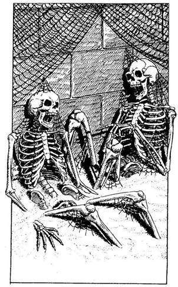
13.
Benyitsz az ajtón, és egy kis szobában találod magad, ahol évek óta nem járt senki. Vastag por takar mindent, a pókhálók függönyként lógnak alá. A szemközti falnak támaszkodva két tátott szájú csontváz ül derékig a porba ágyazva. Az egyik csontváz ujjával rámutat a másikra. Hirtelen becsapódik mögötted az ajtó, és az ujjal mutogató csontváz megszólal. - Nincsen sem bátyám, sem nővérem, de ennek az embernek az apja az én apámnak a fia. Ki ő? - Mit teszel?
Az ajtóhoz rohansz? Lapozz a 207-re.
Azt válaszolod, hogy ő a
nagyapja? Lapozz a 84-re.
Azt válaszolod, hogy ő az apja? Lapozz a 302-re.
Azt válaszolod, hogy ő a fia? Lapozz a 371-re.
14.
Gyorsan felragadod a rövid dárdát, és visszamászol a lyukon, mielőtt még bárki megjelenne a csapatból, hogy megnézze, mi történt. Lapozz a 1555-re.
15.
Nagy bátorsággal és elszántsággal legyőzöd a fájdalomérzetet. Kimerülten zuhansz a földre, amikor fájdalmad végre csökken. Teljesen legyengültél, minden erőd elhagyott. Vesztesz 3 ÉLETERŐ pontot. Felülsz, és elhajítod az elátkozott kesztyűt. Liche Királynő némán lehúz az ujjáról egy aranygyűrűt, és a lábad elé veti. Nem kérdezel tőle semmit, csak felkapod a gyűrűt, és kirohansz a szobából az alagútba. Ha jobbra fordulsz - lapozz a 285-re. Ha balra mész a T elágazás mellett - lapozz a 227-re.
16.
A lángok nagy meleget árasztanak, de a tűzbiztos palást védelmet nyújt. Amikor átmész a boltív alatt, egy keresztútnál találod magad. Jobbra nézve nem látsz semmi érdekeset a hosszú alagútban, de amikor balra tekintesz, észreveszed, hogy lóg valami a mennyezetről. Úgy döntesz, hogy megnézed, mi az - lapozz a 88-ra.

17.
A csel sikerül. Láncos buzogányod nekivágódik ellenfeled lábának, aki elesik. Míg ott nyög a földön, úgy döntesz, hogy továbbállsz, még mielőtt valaki más is meghallja, hol vagy. Amilyen csöndben csak lehet, balra indulsz. Lapozz a 120-ra.
18.
Csakhamar megtudod, miért voltak ott a patkányok a szobában, ahol most vagy. Ez ugyanis egy raktár, amely zsúfolva van hordókkal, zsákokkal és ládákkal. A falak mentén, a földtől a mennyezetig, kancsókkal és palackokkal teli polcok húzódnak. Ennek ellenére az élelmiszer nagyobb része penészes és rohadt, és azt is megdézsmálták a patkányok. Miután csaknem mindent kinyitsz és átvizsgálsz, csak egy cipót meg egy darab sós húst találsz többé-kevésbé ehetőnek. Mit teszel?
Megeszed a cipót? Lapozz az 57-re.
Megeszed a sós húst? Lapozz a 184-re.
Nem eszel semmit, és ismét
fölmész a lépcsőn? Lapozz a 305-re.
19.
A Lopakodónak semmije sincs, kivéve egy csontmedált, amely a nyakában lóg. Ha a medált a saját nyakadba akarod tenni - lapozz a 70-re. Ha inkább visszamászol a kötélen - lapozz a 328-ra.
20.
Elöl az alagútban hirtelen mozgásra leszel figyelmes. Egy kicsiny, emberszerű lény, amint megpillant, elfut előled. Kíváncsi vagy, vajon ki lehet az, így hát utánaeredsz - lapozz a 258-ra.
21.
Az alagút elég meredeken emelkedik felfelé, és a levegő egyre hűvösebb lesz. A sima utat kőlépcsők váltják fel, s ez kissé megkönnyíti számodra a haladást. Félúton vagy, amikor három egymást követő, pirosra festett lépcsőfokot veszel észre. Ha továbbmész a lépcsőkön - lapozz a 372-re. Ha inkább átléped a három piros lépcsőfokot - lapozz az 50-re.
22.
Negyvenkét rabszolga társaságában haladsz át különböző tekergős folyosókon, mígnem az arénába jutsz. A nap teljes erővel tűz, és elviselhetetlenül forróvá hevíti mezítelen lábatok alatt a homokot. Egy tribün tetején fekete páncélba öltözött, sisakos alakot pillantasz meg, akit kétoldalt egy-egy őr vigyáz. Leborultok előtte, és figyelitek, amint Lord Carnuss kezét a magasba emelve így szól hozzátok: - Ugye tudjátok, miért vagytok itt! Az az óhajom, hogy képviseltessem magam a Bajnokok próbáján. Néhányan közületek már ma meghalnak, néhányan holnap vagy az azt követő napokon, mindaddig, amíg csak egyvalaki marad életben. Halálba menők, köszöntelek benneteket! - Lord Carnuss ezután ismét helyet foglal, és fejének egyetlen biccentésével jelt ad a kezdéshez. A rabszolgákat hatos csoportokban hétfelé osztják. Te egy elffel, két északi emberrel, egy törpével meg egy ogre-val kerülsz egy csoportba. A te csoportod kezd, mégpedig elsőként a kitartás- és erőpróbával. Mindegyikőtök hátára nehéz kövekkel megrakott zsákot kötöznek. Ekkor izzó parazsat hoznak be, és kupacokba rakják a küzdőtéren. Mind a hatan a startvonalhoz álltok, és az adott jelre a zsákkal a hátatokon addig kell az izzó parázskupacok között versenyt futnotok, amíg egyikőtök meg nem botlik vagy össze nem esik. Elindultok, és sorban egymás után megpróbáljátok átugrani az első halom parazsat. Ha gyorsítani akarod a lépteidet - lapozz a 310-re. Ha inkább hátul maradsz - lapozz a 107-re.
23.
Az alagúton még körülbelül száz métert haladsz előre, amikor valami furcsát észlelsz. Balról a falban egy boltívet pillantasz meg, melyet vas sárkányfejek díszítenek. A sárkányok száján lángnyelvek csapnak ki, összefüggő tűzfüggönyt alkotva a boltív előtt. Kissé távolabb az alagútban észreveszed, hogy valami lóg a mennyezetről. Ha átfutsz a tüzes nyíláson - lapozz a 101-re. Ha inkább megnézed, mi lóg a mennyezetről - lapozz a 88-ra.

24.
Egyik versenyző sem követ a boszorkány szobájába. Amikor a boszorkány ismét testet ölt, fülsiketítő kacagásban tör ki, amint meglátja az arcodat a doboz fedelén. Még legalább egy évig nem lesz látogatója ennek a szobának, ahol mindörökre fogságban maradsz.
25.
A Próbamester egy pillanatra elhallgat, majd lassan közli: - Túljutottál a második próbán. Most az utolsó felvonás következik - velem kell megküzdened! Bambuszrudakkal fogunk harcolni - mintha karddal vívnánk meg. Minden egyes fejre vagy mellkasra mért ütés halálosnak számít. Tájékozta-
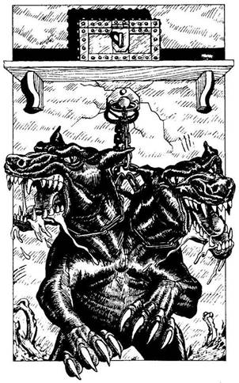
tásodra még elmondom, hogy vakságom nem jelent számomra semmiféle hátrányt, ugyanis a fülem igen jó, és mindig tudni fogom, merre vagy. Most pedig vedd ki a rudat a szekrényből, én készen állok. - Amikor elveszed a rudat, a Próbamester feláll, és a fadobozok lehullanak a földre. Mezítláb közelít feléd, fejét oldalra fordítva, hogy jobban halljon. Ha rá akarsz suhintani a bambuszrúddal, hogy elveszítse az egyensúlyát - lapozz a 134-re. Ha inkább felkészülsz, hogy kivédd az ütését - lapozz a 204-re.
26.
Amint hozzáérsz a kilincshez, hangos ugatást, morgást hallasz. Benyitsz az ajtón, és ekkor egy kétfejű, vad fekete kutyát pillantasz meg, amely pórázánál fogva a kis szoba túlsó falához van kikötve. Szemei vörösek, és nyál csorog mindkét, éles fogakkal teli szájából. A szobában iszonyú rendetlenség uralkodik, mindent összetört és összerágott a kutya. A vadállat fölött lévő falra erősített polcon azonban egy fémládikót pillantasz meg. Mit teszel?
Megtámadod a kutyát? Lapozz a 294-re.
Belefújsz a fasípodba
(ha van nálad)? Lapozz a 67-re.
Becsukod az ajtót, és
továbbmész a folyosón? Lapozz a 379-re.
27.
Beledobod az aranygyűrűt a dobozba, és óvatosan a függőhídra lépsz. A híd elég erősnek bizonyul, így aztán sietve átfutsz rajta. Lapozz a 117-re.
28.
Ahogy mész előre, vízcsobogás hangja üti meg a füledet. A mennyezetről lecsorgó víz apró tócsákba gyűlik össze a földön. Kinyújtod a kezedet, tenyereddel felfogsz egy cseppet - és fájdalmadban felordítasz. Nem víz ez, amint hitted, hanem maró sav. Ha van pajzsod - lapozz a 71-re. Ha nincs pajzsod, mégis továbbmész és megkockáztatod, hogy a sav megégessen - lapozz a 335-re. Ha visszamész a púposhoz, és átmész a másik boltíves átjárón - lapozz a 291-re.
29.
Összeszeded minden akaraterődet, és valahogy sikerül legyőznöd a Csontördög bénító hatalmát. Két kézzel fogva kardod markolatát, elszántan támadsz rá ördögi ellenfeledre.
Csontördög ÜGYESSÉG 10 ÉLETERŐ 8
Minden egyes forduló előtt dobj egy kockával. Ha 1-et vagy 2-t dobsz, nem leszel képes ellenállni a Csontördög akaratod feletti uralmának, és ismét a bénító félelem kerít a hatalmába - lapozz a 265-re. Ha 3-6-ig dobsz, továbbra is ellenállsz akaratod elleni támadásának, és a szokásos módon küzdesz meg vele. Ha legyőzöd - lapozz a 326-ra.

30.
A nyílvessző hátulról beleáll a válladba. Vesztesz 1 ÜGYESSÉG pontot és 2 ÉLETERŐ pontot! Nehezedre esik hozzáérni a nyílvesszőhöz, de legyőzöd fájdalmadat, és kihúzod a válladból. Ezúttal már sokkal figyelmesebben folytatod az utadat - lapozz a 398-ra.
31.
A Csonttörő beleszimatol a levegőbe, hogy megtudja, merre vagy, majd fürgén balra lép, amikor elveted a hálót, amely homokon kívül semmi egyebet nem fog el. Vesztesz 1 SZERENCSE pontot! Dobj két kockával! Ha a kapott összeg ugyanannyi vagy kevesebb, mint ÜGYESSÉG pontjaid száma - lapozz a 66-ra. Ha a kapott összeg nagyobb, mint ÜGYESSÉG pontjaid száma - lapozz a 334-re.

32.
Előre tudod, mit fog tenni a Próbamester. Kaszáló mozdulattal meglendíti feléd a rudat, de te könnyedén kivéded. Rúdja hangos reccsenéssel csapódik a te rudadhoz. Ha a kezdeményezést átvéve vissza akarsz vágni - lapozz a 239-re. Ha ismét csak védekezni akarsz - lapozz a 267-re.
33.
A sok-sok szárított virág és fű a piros hátú mérges pók fészke. Figyelmetlenül hozzáérsz, amint éppen egy pipacs szárán mászik fölfelé. A pók a kezedbe mar, mérge azonnal hat. Vesztesz 4 ÉLETERŐ pontot! Ha túléled a pók csípését, menj tovább az alagútban, és lapozz a 69-re.
34.
A láda tele van az Ork holmijával, amely többnyire csupa limlom. Egy üveg, benne egy csomó patkányfarok, egy ogre csípőcsontja, egy darab penészes kenyér, egy pár ócska csizma, egy törött nyílvessző, egy nyirkos bricsesznadrág tele zöld penészfolttal, három fafogas meg egy törött vizeskancsó - mindez csak néhány dolog abból, amit a láda rejt. A sok limlom alatt azonban találsz egy mellvértet. Ha fel akarod próbálni a mellvértet - lapozz a 321-re. Ha inkább a mellvért nélkül távozol a szobából és továbbmész az alagútban - lapozz a 133-ra.

35.
Azt teszed, amit a Próbamester mond, és figyeled, amint megszámolja a gyűrűket. - Eddig jó! - mondja.
- Most pedig lássunk neki a következő próbának! - Összegyűjti a gyűrűket, és visszavezet ahhoz a trónhoz, amelyen előzőleg ült. Visszaadja a gyűrűket, és felszólít, hogy ülj le. A trónszék karfáján kilenc négyzetre osztott háromszor hármas tábla van, és a négyzetek egytől kilencig vannak megszámozva. - Most pedig helyezz el három gyűrűt egy-egy négyzetben! - Ha tudod, mely négyzetekre kell tenned a gyűrűket, lapozz arra a fejezetre. Ha nem tudod - lapozz a 286-ra.
36.
A kőpadlón a szalma alatt egy aranygyűrűt találsz. Beleteszed az övedre erősített bőrzacskóba, elhagyod a szobát, és bemész az alagútba. Lapozz a 82-re.
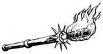
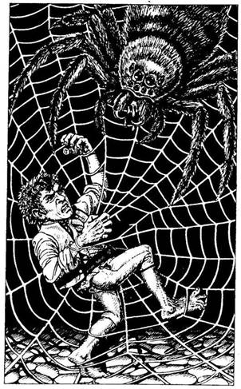
37.
Gyorsan bemész a barlangba. Miután szemed megbarátkozott a sötétséggel, egy segítségért kiáltozó alakot veszel észre. Az emberszerű lény, akit csak nemrég láttál, most az Óriáspók hálóján akadt fenn. A kicsiny emberke képtelen kiszabadítani magát a sűrű fonalak fogságából, és könyörögve kér, hogy vágd le róla a hálót. Ekkor a pók hirtelen beleugrik a mennyezetről a hálójába, és villámgyorsan elindul fogságba esett prédája felé. Ha meg akarod támadni az Óriáspókot - lapozz a 118-ra. Ha inkább otthagyod az emberkét és továbbmész az alagútban - lapozz a 397-re.
38.
Ügyetlenül elesel a lépcsőn, és kificamítod a bokádat. Vesztesz 1 ÜGYESSÉG pontot! Sérülésed azonban nem akadályoz meg abban, hogy talpra szökkenve ismét folytasd a küzdelmet. Lapozz a 8-ra.

39.
Az íjpuska nyílvesszője beléd vág, és hátratántorodsz. Iszonyú fájdalmat érzel a combodban, ahonnan a nyílvessző vége kiáll. Vesztesz 2 ÉLETERŐ pontot! Összeszorított foggal kihúzod a combodból a nyílvesszőt, és amennyire tudod, bekötöd a sebedet. Fájdalmasan bicegve befordulsz a sarkon, és körülbelül ötven méter megtétele után egy ajtóhoz érsz, mely jobbra nyílik a falban. Ha ki akarod nyitni az ajtót - lapozz a 104-re. Ha inkább továbbmész - lapozz a 20-ra.
40.
Az öregember egy hátraszaltót csinál, és mosolyogva, könnyedén földet ér. Úgy döntesz, kivárásos játékot fogsz vele játszani, és hagyod, hogy ő lépjen elsőnek. Lapozz a 204-re.
41.
Abban a pillanatban, amikor kirántod a baltát a fatönkből, az önálló életet kezd élni, és képtelen vagy elereszteni. A balta hatalmasakat suhint a levegőbe - éle veszedelmesen villan a lábad közelében. Tedd próbára a SZERENCSÉDET! Ha SZERENCSÉD van - lapozz a 296-ra. Ha nincs SZERENCSÉD - lapozz a 269-re.
42.
A láncos buzogány a válladat találja el, de éppen csak súrolja. Vesztesz 1 ÉLETERŐ pontot! Tovább lóbálod saját fegyveredet, ezúttal sikerrel, ugyanis eltalálod ellenfeled lábát. Nyögve terül el a homokban, te pedig továbbállsz, mielőtt még valaki meghallaná, hol vagy. Amilyen gyorsan csak tudsz, balra indulsz - lapozz a 120-ra.

43.
Egy kis szobába lépsz be, amelyben, egy páncélruhán és egy szárnyas sisakon kívül semmi sincs. A páncélruha két magas támlájú szék között áll, egy pajzs pedig az egyik székhez van támasztva. A szoba túlsó végében egy újabb ajtót látsz, melyre rovásírással különböző jeleket festettek. Mit teszel?
Elteszed a szárnyas sisakot? Lapozz a 126-ra.
Elteszed a pajzsot? Lapozz a 187-re.
Megpróbálod kisilabizálni a
rovásírást? Lapozz a 157-re.
Kinyitod az ajtót, és kimész a
szobából? Lapozz a 221-re.
44.
Baloldalt az alagút falában körülbelül fél méter átmérőjű lyukat látsz. Bentről ketyegés és zümmögés különös egyvelegét hallod. Ha be akarsz mászni a lyukon - lapozz a 340-re. Ha inkább továbbmész - lapozz a 155- re.
45.
Nemsokára egy újabb ajtóhoz érsz, mely jobbra nyílik az alagútban. Ha ki akarod nyitni az ajtót - lapozz a 235-re. Ha inkább továbbmész - lapozz a 177-re.
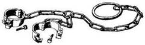
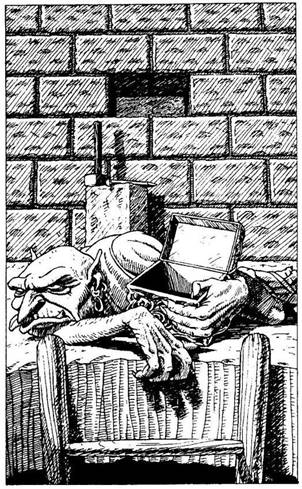
46.
Amilyen óvatosan csak lehet, felmászol a létrán, és belesel a mennyezetben lévő nyíláson. Egy földön fekvő halott Goblint látsz, aki egy nyitott ezüstládikót tart a kezében. A háta mögött lévő falból egy kőtömböt emeltek ki; ebből arra következtetsz, hogy a ládikót valószínűleg ott rejtették el. Ha magadhoz akarod venni az ezüstládikót - lapozz a 224-re. Ha inkább visszamászol a létrán és továbbmész az alagútban - lapozz a 361-re.
47.
Miközben óvatosan haladsz előre az alagútban, különös, csattogó hangra leszel figyelmes. Ekkor az alagút falába vájt barlangnyílás félhomályából egy három méter hosszú szörny bukkan elő, és számtalan apró lábával feléd siet. A csattogó hangot csontos fekete kitin- páncéljának mozgás közben egymáshoz ütődő lemezei adják. Sebesen közeledik feléd, majd hirtelen megáll, és hátsó lábaira emelkedik, hogy erős állkapcsával beléd marjon. Egy pillanatra kivillan az Óriás Százlábú puha alhasa. Ha van nálad dárda - lapozz a 244-re. Ha nincs - lapozz a 270-re.
48.
Nézed a fogantyúkat, és választasz. Melyiket húzod meg?
A 3-as fogantyút? Lapozz a 377-re.
A 6-os fogantyút? Lapozz a 257-re.
A 9-es fogantyút? Lapozz a 158-ra.
A 12-es fogantyút? Lapozz a 116-ra.
49.
A leves tele van csirkehússal és zöldséggel. Nagyon ízlik. Mohón befalod, és egy darab kenyérrel az utolsó cseppig kitunkolod. Már két hete nem ettél rendesen, de most elég erősnek érzed magad, hogy megkezdd első napodat a Halálarénában. Lapozz a 22-re.
50.
A lépcsőfokok igen meredeken vezetnek fölfelé, és jókorát kell ugranod, hogy átrepülj fölöttük. Ha mellvért van rajtad - lapozz a 206-ra. Ha nincs rajtad mellvért - lapozz a 327-re.

51.
Egy ügyes mozdulattal védekezési módot változtatsz, és a rudat leeresztve a bordáidat véded. A Próbamester rúdja nagy csattanással csapódik a tiedhez. Ha a kezdeményezést átvéve vissza akarsz vágni - lapozz a 239-re. Ha ismét csak védekezni akarsz - lapozz a 267-re.
52.
A szobában egy halom szalmán és néhány régi csonton kívül semmi sincs. Ha át akarod vizsgálni a szoba sarkában lévő szalmakupacot - lapozz a 36-ra. Ha inkább elhagyod a szobát és továbbmész az alagútban - lapozz 82-re.
53.
A palást különleges tűzálló anyagból készült. Nyersz 1 SZERENCSE pontot! Ha meg akarod nézni, hogy mi van a negyedik és az ötödik urnában - lapozz a 147-re. Ha inkább továbbmész - lapozz a 69-re.
54.
A verem aljába egy hegyes végű karót szúrtak le. Amikor lezuhansz, felnyársal - azonnal meghalsz.
55.
Amikor kardoddal lesújtasz a bálványra, az még csak meg sem sérül. Közönséges kard nem tesz kárt benne. Viszont csillogó kardjaival ő is rád vág - és te nem menekülhetsz... Hősiesen védekezel néhány percig, mígnem az egyik kard végez veled. Kalandod véget ér!
56.
Átkozod magad, amiért ezt a fegyvert választottad, ugyanis rájössz, hogy a kard mit sem ér a Csonttörő vashoz hasonló páncélzatával szemben. Csak egyféleképpen lehet legyőzni a Csonttörőt: ha ledöntöd a lábáról. Ekkor ugyanis elveszti az egyensúlyát, és soha többé nem lesz képes talpra állni. Meg kell próbálnod kiütni alóla a lábait, de közben vigyáznod kell, hogy el ne kapjon.
Csonttörő ÜGYESSÉG 9 ÉLETERŐ 10
Amint elvesztesz egy fordulót - lapozz a 343-ra. Ha egyetlen fordulót sem vesztesz el, te nyersz - lapozz a 268-ra.

57.
Amikor kettétöröd a cipót, egy nehéz tárgy hullik ki belőle az öledbe. Ez nem más, mint egy vasreszelő, amelynek a későbbiek során majd még hasznát veheted. Bedugod az öved mögé, és nekilátsz a cipónak. Nyersz 2 ÉLETERŐ pontot! Ha most a sós húst akarod megenni, és még nem tetted volna - lapozza 184-re. Máskülönben nincs mit csinálnod itt - ismét föl kell menned a lépcsőn. Lapozz a 305-re.

58.
Menet közben rálépsz egy kőre, amely egy láthatatlan csapdát hoz működésbe. A mennyezetben lévő lyukakból vasrudak zuhannak köréd. Megpróbálod kiemelni azokat, de képtelen vagy rá, körül sem tudod fogni őket. Ha van nálad vasreszelő - lapozz a 106-ra. Ha nincs vasreszelőd - lapozz a 396-ra.
59.
Az ajtó zárva van. Ha a válladdal megpróbálod beszakítani - lapozz a 91-re. Ha inkább az erődet kímélve továbbmész az alagútban - lapozz a 150-re.
60.
Jól sejtetted: amint lenyomod az elefánt ormányát, a sarokvassal ellátott fedél felpattan. Egy aranygyűrű pottyan a földre; fölemeled, és beleteszed a bőrzacskóba. Nem időzöl tovább a teremben, hanem gyorsan továbbmész az átjárón. Lapozz a 263-ra.

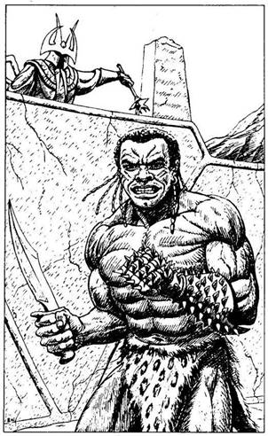
61.
Üdvrivalgás harsan, amikor ellenfeled a földre zuhan. Hallod, amikor az örök bejönnek az arénába. Leveszik a szemedről a kendőt, és leoldják csuklódról a fegyvereket. Visszavezetnek a celládba, ahol már csak a délvidéki embert találod. Már csak ő áll győzelmed útjában. Ezen az estén étellel-itallal igencsak jól ellátnak, és a sebeidet is bekötözik. Nyersz 4 ÉLETERŐ pontot! Reggel a szokásos szertartás szerint ismét az arénába kísérnek. Ezúttal a délvidékivel kell megküzdened. Mindketten egy-egy tőrt és egy szöges kesztyűt kaptok. Lord Carnuss intésére kezdetét veszi az utolsó arénacsata.
Délvidéki Ember ÜGYESSÉG 10 ÉLETERŐ 10
Ha te győzöl - lapozz a 261-re.

62.
Az ütés teljes erővel a halántékodat éri. Visszazuhansz a földre, kardodat épp hogy csak félig tudtad kihúzni a hüvelyéből... Kalandod itt véget ér!
63.
Szerencséd van, hogy a nyakadban lóg az a talizmán, amely megvéd a Csontördög támadásától, mely bénító félelmet keltve az ellenfélben, annak akarata ellen irányul. Nyersz 1 SZERENCSE pontot! Erősen megmarkolod a kardodat, és ellenfeledre támadsz.
Csontördög ÜGYESSÉG 10 ÉLETERŐ 8
Ha legyőzöd - lapozz a 326-ra.
64.
Miközben azon igyekszel, hogy kiszabadulj a pók hálójából, az Óriáspók mélyen belemar a lábadba. Dobj két kockával! Ha a kapott összeg ugyanannyi vagy kevesebb, mint ÜGYESSÉG pontjaid száma - lapozz a 108-ra. Ha a kapott összeg nagyobb, mim ÜGYESSÉG pontjaid száma - lapozz a 254-re.
65.
A Dombi Troll kopott szőre közé ragadva félig megrágott ételt találsz. Iszonyú szaga van, és egyáltalán nem néz ki csábítóan. Ha ennek ellenére akarsz belőle enni - lapozz a 201-re. Ha inkább továbbmész - lapozz a 211-re.
66.
Fürgén felkapod a hálót, miközben sikeresen kivéded a Csonttörő karcsapásait. Ismét célzol, és elveted a hálót. Dobj egy kockával! Ha a dobott szám 1-3 - lapozz a 255-re. Ha a dobott szám 4-6 - lapozz a 189-re.
67.
A síp éles hangjára a kutya megnyugszik. Abbahagyja a morgást, és szemei lassan lecsukódnak. Elnyúlik a földön, és egykettőre elalszik. Lapozz a 217-re.

68.
Nemsokára egy vasajtóhoz érsz, amely a jobb oldali falból nyílik. Mikor az ajtóhoz tapasztod a füledet, bentről női hang kántálását hallod. Ha be akarsz nyitni az ajtón - lapozz a 318-ra. Ha nem, továbbmehetsz az alagútban - lapozz a 285-re, vagy visszamehetsz a T elágazás másik szárnyán - lapozz a 227-re.
69.
Körülbelül húsz méterrel följebb újabb ajtóhoz érsz. Az ajtó feketére van festve, és a kilincset egy nagy rézkarika helyettesíti. Ha be akarsz nyitni az ajtón - lapozz a 182-re. Ha inkább továbbmész - lapozz a 109-re.
70.
Nem történik veled semmi különös vagy kellemetlen dolog azok után, hogy a nyakadba akasztod a medált. Körülnézel, majd úgy döntesz, az lesz a legjobb, ha visszamászol a kötélen. Lapozz a 328-ra.

71.
A pajzsot a fejed fölé emelve sértetlenül mész végig a savas alagúton. Az alagút végében végre megpillantod a napfényt, és gyorsabban szeded a lábadat. Lapozz a 188-ra.
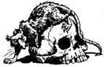
72.
A Próbamester elhallgat, majd lassan így szól: - Megbuktál a próbán! Mától kezdve a szolgám leszel, és az elkövetkezendő viadalok idejére a barlangi embert fogod helyettesíteni. - Tudod, hogy lehetetlen ellenállni a Próbamester varázserejének, így hát egy életre rabszolgaságra adod a fejedet. De talán majd egyszer eljön a nap, amikor bosszút állhatsz Lord Carnusson...
73.
Nem tudod, hogy a lábad előtt a homokban egy holttest fekszik. Megbotlasz benne, és elterülsz a földön. Hirtelen elzúg a füled mellett egy láncos buzogány. Tulajdonosa hallotta, amint elestél, és most meg akar ölni. De ő is megbotlik a holttestben, és rád zuhan. Teste nehéz és izzadságszagot áraszt. Birokra kelsz vele a homokban. Pajzsoddal püfölöd, s közben megpróbálod a másik kezeddel meglendíteni láncos buzogányodat.
Rabszolga ÜGYESSÉG 9 ÉLETERŐ 8
Ha te győzöl - lapozz a 196-ra.
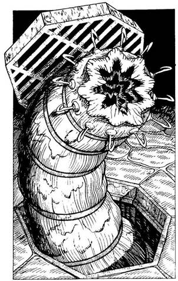
74.
Miközben megpróbálod fölemelni a rácsot, az hirtelen fölemelkedik a levegőbe. Egy erős, undorító teremtmény bújik elő alóla. Furcsa feje hosszú, gyűrűs testhez tapad. Szeme nincs, viszont kampókkal körülvett, szívókoronghoz hasonló szája van. Olyan, akar egy galandféreg. Tested melege csalta elő a Vérférget, amely kampóival a testedbe akar marni. Dobj egy kockával! Ha 1-3-ig dobsz - lapozz a 325-re. Ha 4-6-ig dobsz - lapozz a 234-re.
75.
Kardod markolatának ütésétől a malac apró darabokra törik. Az agyagdarabok között apró amulettet találsz, mely fényes fekete korallból készült. Az amulettet azonban megátkozták, és bajt hoz rád. Vesztesz 2 SZERENCSE pontot! A barlang végében sötét kis folyosóra bukkansz, de a félhomályban nem látod, hová vezet. Ha ezen a folyosón akarsz továbbmenni - lapozz a 144- re. Ha inkább visszamész a keskeny alagútba - lapozz a 230-ra.
76.
Közeledő gyors léptek zaja üti meg hirtelen a füledet; valakinek vagy valaminek felkeltetted a figyelmét. Megragadod kardod markolatát, és ekkor egy állig páncélba öltözött Mutáns Ork őrrel találod szemben magad, aki csatabárdjával közeledik feléd.
Mutáns Ork ÜGYESSÉG 7 ÉLETERŐ 7
Ha te győzöl - lapozz a 341-re.
77.
Felrohansz a kőlépcsőkön, és kardoddal rávágsz a hatalmas nyelvre. Bíborvörös vér buggyan ki belőle, rád zúdul, majd végigfolyik a lépcsőkön, és kellemetlenül síkossá teszi azokat. Miközben a nyelv ide-oda csapkod, az elf egyre hangosabban üvölt haláltusájában. Dobj két kockával! Ha a kapott összeg Ugyanannyi vagy kevesebb, mint ÜGYESSÉG pontjaid száma - lapozz a 245-re. Ha a kapott összeg nagyobb, mint ÜGYESSÉG pontjaid száma - lapozz a 132-re.

78.
A legjobbkor veszed észre az ogre lábát, és sikerül átugranod, majd rohanni kezdesz előre. Nemsokára ismét lassítasz, és a számodra megfelelő ritmusban futsz tovább körbe-körbe az arénában. Valahányszor égő szénkupacot kell átugranod, erősen összeszorítod a fogadat. Húsz perccel a start után még mindig egy bolyban futtok, amikor az egyik északi ember kilő a sorból. Lehagy benneteket. Mikor elhúz mellettetek, ti is gyorsítotok, hogy lépést tartsatok vele. Dobj két kockával, és ha megkorbácsoltak az őrök, adj a kapott összeghez 3-at. Ha az eredmény ugyanannyi vagy kevesebb, mint ÜGYESSÉG pontjaid száma - lapozz a 360-ra. Ha az eredmény nagyobb, mint ÜGYESSÉG pontjaid száma - lapozz a 250-re.
79.
A Dombi Troll a szeme sarkából észrevesz, és eléd áll. Most még mérgesebb, mint az előbb. Felkapja a csatabárdját, és őrjöngve rád támad.
Dombi Troll ÜGYESSÉG 9 ÉLETERŐ 10
Ha legyőzöd - lapozz a 65-re.
80.
Minden erőddel harcolsz az illúzió ellen, de mégis úgy érzed, a fájdalom valódi. Egyre kínzóbb fájdalmadban a földre veted magad. Vesztesz 4 ÉLETERŐ pontot! Liche Királynő lassan feláll trónusáról, és elindul feléd, hogy csonttőrével megadja neked a halálos döfést. Kínlódva felállsz, hogy megküzdj vele.
Liche Királynő ÜGYESSÉG 9 ÉLETERŐ 9
E harc idejére vonj le 3-at ÜGYESSÉGEDBŐL! Ha te győzöl - lapozz a 277-re.

81.
Bőrzsákodból előveszed a sárgaréz mutatókat, és az óra közepén lévő bütyökre illeszted őket. Pontosan három óra. Most a fogantyúkhoz fordulsz, és eldöntöd, melyiket húzod meg. Lapozz a 48-ra.
82.
Az alagút csakhamar egy T elágazásba torkollik. Ha balra akarsz továbbmenni - lapozz a 229-re. Ha inkább jobbra akarsz menni - lapozz a 304-re.
83.
A nyílvessző beleáll a hátad közepébe, és átszúrja a szívedet. A Halállabirintus ismét hű maradt nevéhez!

84.
- Tudatlanságodért az életeddel fizetsz! - szólal meg a csontváz. Villám lövell ki az ujjából, és a melledbe fúródik. Azonnal meghalsz!
85.
Átmászol a vérző nyelven, és egy hosszan lefelé vezető meredek lépcsősorhoz érsz. A mélyből egy kislány lágy énekhangja hallatszik. Ha le akarsz menni a lépcsőn, hogy megnézd, ki énekel - lapozz a 364-re. Ha inkább visszamész az alagútba - lapozz a 138-ra.
86.
Bokád kificamodott, képtelen vagy futni. Az északi ember körbefut az arénában, és leköröz téged - ő nyeri a versenyt. Mialatt a többi öt futót visszavezetik a cellájukba, veled sietve végeznek, még mielőtt a következő verseny kezdetét venné.
87.
Remegő kézzel nyúlsz a sötétben a zsákba, hogy kitapogasd a fiolát. Ha egynél több fiola van a zsákodban - lapozz a 365-re. Ha csupán az ellenmérget tartalmazó fiola van a zsákodban - lapozz a 331-re.

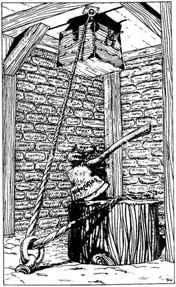
88.
Amint közelebb lépsz, látod, hogy egy kötél az, amit átvezettek a mennyezethez erősített karikán, és a végéhez egy faládát erősítettek. A láda elérhetetlen magasságban van. A kötél végét a padlóba épített karikán átbújtatva két vaspánttal egy fatönk tetejéhez erősítették. A fatönkből egy bárd áll ki, élén ez olvasható: "Kötélvágó." Mit teszel?
Átvágod a kötelet a bárddal? Lapozz a 41-re.
Átvágod a kötelet a kardoddal? Lapozz a 149-re.
Nem törődsz a kötéllel, és
továbbmész? Lapozz a 388-ra.
89.
Amint egyre beljebb hatolsz a barlangba, a mennyezetről alácsurgó víz zubogása mind erősebbé és erősebbé válik. A barlang sötétjében a hatalmas tócsák között nem veszed észre, hogy egy mérges kígyó kúszik a lábad elé. Tedd próbára a SZERENCSÉDET! Ha SZERENCSÉD van - lapozz a 105-re. Ha nincs SZERENCSÉD - lapozz a 137-re.
90.
Amikor a kardod markolatával megkoccantod a harangot, az halkan megkondul. Fejed fölött szárnycsapkodást hallasz. Felkészülsz a védekezésre, de ekkor egy fehér galamb röppen le, és rátelepszik a harangra. Legnagyobb meglepetésedre látod, hogy egy aranygyűrűt tart a csőrében, amelyet kinyújtott tenyeredbe ejt. A gyűrűt gondosan beleteszed a zsákodba, aztán visszamész a folyosón, majd balra befordulsz az alagútba - lapozz a 333-ra.
91.
Dobj két kockával! Ha a kapott összeg ugyanannyi vagy kevesebb, mint ÜGYESSÉG pontjaid száma - lapozz a 332-re. Ha a kapott összeg nagyobb, mint ÜGYESSÉG pontjaid száma - lapozz a 357-re.
92.
A Próbamester azt mondja, hogy tedd a gyűrűket a padra. Lapozz a 367-re.
93.
A lépcső egy ajtóhoz vezet, amely mögül cincogást és lábdobogást hallasz. Ha ki akarod nyitni z ajtót - lapozz a 146-ra. Ha inkább visszamész a lépcsőkön - lapozz a 305-re.
94.
Egyenletes ritmusban buksz le, illetve ugrasz föl, majd a pózna lassan megáll. Túléltél még egy próbát! Azonnal kezdetét veszi a következő próba: két ötös csoportba osztanak benneteket. Az első csoport tagjainak - egy törpének, egy fél-Orknak, egy női harcosnak, egy barbárnak meg egy sötét bőrű délvidékinek - átadnak egy-egy láncos buzogányt meg egy pajzsot. Ezután mindegyiknek bekötik a szemét, és megparancsolják nekik, hogy kezdjenek el egymás ellen harcolni. A harc addig tart, amíg csak egyvalaki marad életben közülük. Nézni is iszonyú, ahogy a harcosok óvatosan lépkedve az arénában láncos buzogányukat lengetik. A törpe esik el elsőnek, majd röviddel utána a női harcos. Végül egyedül a délvidéki férfi marad életben. Leveszik a szeméről a kötést, aztán elvezetik. Ezután a te csoportod tagjainak is kiosztják a buzogányokat meg a pajzsokat. A szíved a torkodban dobog, amikor jelt adnak, hogy küzdj meg négy láthatatlan ellenfeleddel. A homokban mezítláb senki nem csap zajt. Ha balra lépsz - lapozz a 297-re. Ha jobbra lépsz - lapozz a 9-re.
95.
A szökőkút hideg vize felfrissít, de furcsa mellékhatása van. Nyersz 1 ÉLETERŐ pontot, de vesztesz 2 ÜGYESSÉG pontot, mert a víztől igen gyorsan megöregszel. Nem egészen egy perc alatt harminc évet öregedtél, de te ezt önmagadon nem veszed észre, csak elszántan mész tovább az alagútban - lapozz a 329-re.
96.
Elmozdítasz néhány sziklát, és mögöttük egy ajtót találsz. Ha gondosan elhordod a sziklákat, hogy ki tudd nyitni a vasajtót - lapozz a 215-re. Ha inkább átmész a T elágazás másik oldalán lévő ajtóhoz - lapozz a 375-re.
97.
A gyümölcs finom, jóllaksz vele. Nyersz 2 ÉLETERŐ pontot! Amikor már teleetted magad, kinyitod a szoba egyetlen ajtaját. Lapozz a 163-ra.
98.
A szobában, ahova benyitsz, egyetlen asztal van, melyen egy korsó meg egy flaska áll. A korsóban színtelen, szagtalan, gyöngyöző folyadékot látsz. Ha a folyadékból egy keveset a palackba akarsz tölteni, hogy majd igyál belőle - lapozz a 4-re. Ha inkább távozol a szobából és visszamész az utolsó T elágazáshoz - lapozz a 232-re.
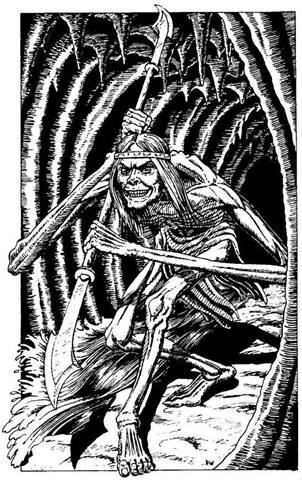
99.
A barlangi ember sokkal erősebb nálad. Hatalmas lendülettel előreránt, és fejjel a gödörbe zuhansz. Azonnal meghalsz.
100.
Csupán villámgyors reflexed ment meg attól, hogy a folyóba lökjön. Meginogsz a párkányon, de egykettőre visszanyered az egyensúlyodat. Kardot rántasz, hogy ellenfeledre támadj. A barlang sötétjéből egy görnyedt, csupa csont és bőr, emberszerű, furcsa, hosszú karú teremtmény bukkan elő. Karja a földet súrolja, bőre barna. Azonnal felismered: ez a Lopakodó, a ravasz bérgyilkos. A Lopakodó egyetlen fegyvere egy vasrúd, melynek mindkét végén egy-egy bárd van. Félelmetes fegyver ez a fürge Lopakodó kezében.
Lopakodó ÜGYESSÉG 9 ÉLETERŐ 9
Ha legyőzöd - lapozz a 19-re.

101.
A lángok martalékává válsz - a földre zuhansz. A Halállabirintus újabb áldozatot követelt.
102.
Balszerencsédre a taktikád nem vált be. Ellenfeled is taktikát változtat - a láncos buzogányt nem a feje fölött, hanem lábmagasságban lendíti meg. Tedd próbára a SZERENCSÉDET! Ha SZERENCSÉD van - lapozz a 42- re. Ha nincs SZERENCSÉD - lapozz a 283-ra.
103.
A Szirén dala megteszi a magáét, még mielőtt betapasztanád a füledet. A vidám ének csábító hangjára a meleg vizű tóba lépsz, és úszni kezdesz a szikla felé. A tóban azonban egy tintahalszerű hatalmas szörny lakik, amelynek öt méter hosszú csápjai vannak. A mélyből meglát, amint a víz felszínén tempózol, és észrevétlenül felúszik hozzád, hogy csápjait köréd tekerje. Dobj két kockával! Ha a kapott összeg ugyanannyi vagy kevesebb, mint ÜGYESSÉG pontjaid száma - lapozz a 191-re. Ha a kapott összeg nagyobb, mint ÜGYESSÉG pontjaid száma - lapozz a 356-ra.
104.
A szobában, ahová benyitsz, nincs más, csupán egy egzotikus gyümölcsökkel teli tál, mely márványtalapzaton áll. Ha enni akarsz a gyümölcsből - lapozz a 395-re. Ha inkább kimész a szobából és továbbmész az alagútban - lapozz a 20-ra.

105.
Szerencsédre nem lépsz rá a kígyóra, és az nem mar meg. Tovasiklik. Körülbelül öt percet töltesz azzal, hogy átkutasd a barlangot, de nem találsz semmi érdekeset, még egy másik kijáratot sem. Egyetlen dolgot tehetsz: vissza kell menned a főalagútig, és azon kell továbbmenned. Lapozz a 161-re.
106.
Előveszed a vasreszelődet, és nekiállsz, hogy átvágj két vasrudat. Hosszú, fáradságos munkával végre kiszabadulsz a ketrecből. Gyorsan szeded a lábadat az alagútban, amikor egyszer csak megpillantod a falon Sukumvit báró portréját. Ha le akarod akasztani a képet, hogy közelebbről megnézhesd - lapozz a 314-re. Ha inkább továbbmész - lapozz a 228-ra.
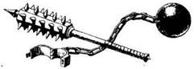
107.
Az egyik északi ember veszi át a vezetést. Igen gyors iramot diktál. Körbe-körbe futtok az arénában. Összeszorított foggal ugrálod át az izzó parázskupacokat. Húsz perc elteltével mindannyian felzárkóztok egymás mellé. Ekkor az északi ember nagyobb sebességre kapcsol. Dobj két kockával, és a kapott összeghez adj hozzá 3-at, ha megkorbácsoltak az őrök. Ha az eredmény ugyanannyi vagy kevesebb, mint ÜGYESSÉG pontjaid száma - lapozz a 360-ra. Ha a kapott összeg nagyobb, mint ÜGYESSÉG pontjaid száma - lapozz a 250-re.

108.
Sikerül kiszabadulnod a pók hálójából, és újra képes vagy felvenni a harcot. Ha sikerül megölnöd az Óriáspókot - lapozz a 348-ra.

109.
Az alagút hirtelen egy T elágazásban ér véget. Amint jobbra nézel, lángok fényét pillantod meg a távolban. Balra egy ajtót látsz az alagút végében. Ha jobbra indulsz el a lángok felé - lapozz a 143-ra. Ha inkább balra mész és kinyitod az ajtót - lapozz a 386-ra.
110.
Lábujjhegyen állva sikerül elérned egy lándzsát. Egy erős rántással kihúzod, de a többi lándzsa ott marad beékelve a mennyezetbe. Boldog vagy, hogy váratlanul új fegyvert szereztél. Továbbmész az alagútban. Lapozz az 5-re.

111.
A Próbamester hirtelen oldalra lendíti a rúdját, és ezzel rákényszerít, hogy gyorsan változtass védekező állásodon. Dobj két kockával! Ha a kapott összeg ugyanannyi vagy kevesebb, mint ÜGYESSÉG pontjaid száma - lapozz az 51-re. Ha a kapott összeg nagyobb, mint ÜGYESSÉG pontjaid száma - lapozz a 169-re.

112.
A káoszbajnok megmosolyogja igyekezetedet, hogy szövetségre lépj vele, és követeli, hogy add át neki összes aranyadat. Ha engedelmeskedsz neki - lapozz a 323-ra. Ha nincs aranyad, vagy nem akarod neki adni - lapozz a 178-ra.
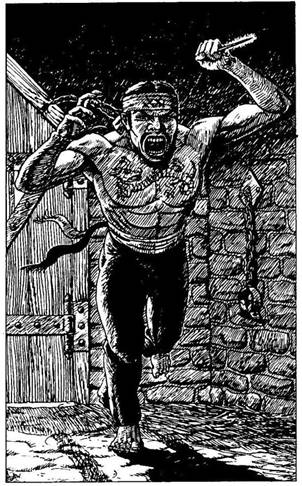
113.
A nap végén csak egyetlen ember tér vissza a celládba. Ez az a gonosz tekintetű keleti, aki akár két rézgarasért is képes lenne megölni. Napnyugtakor az őr váratlanul bekiáltja nektek: - Most már minden cellában csak ketten maradtatok! Azt akarom, hogy reggel minden egyes cellából csak egy ember jöjjön ki a holnapi versenyre! Szép álmokat! - Az őr jót nevet a viccén, és még mielőtt befejezné mondatát, a keleti, kezében egy hosszú, éles tűvel, melyet fejpántjában rejtett el, rád ront. Puszta kézzel kell megvívnod vele.
Keleti Ember ÜGYESSÉG 10 ÉLETERŐ 8
Ha legyőzöd - lapozz a 237-re.

114.
Jóval a gödör túloldala előtt landolnál, de mielőtt halálra zúznád magad, sisakod varázsszárnyai átemelnek a gödrön. Mikor hátrapillantasz, a verem mélyén egymás hegyén-hátán ott látod a Zombikat. Megkönnyebbülten elmosolyodsz, és továbbmész az alagútban. Lapozz a 251-re.
115.
Valami csörög az edény mélyén, de amikor a földhöz vágod, nem törik össze, csak kissé megreped, és zöld színű gáz kezd szivárogni belőle, amely betölti a szobát. Mit teszel?
A szobában maradsz? Lapozz a 173-ra.
Berohansz a barlangba? Lapozz a 307-re.
Visszafutsz az alagútba? Lapozz a 150-re.

116.
Meghúzod a fogantyút, de a falak egyre összébb záródnak. Megpróbálkozol a többi fogantyúval is, de egyiket sem tudod megmozdítani. Ekkor kardod lapjával próbálod megakadályozni a falak összezáródását, de igyekezeted hasztalan. A falak összecsukódnak és halálra zúznak.

117.
Az alagút hirtelen véget ér. A fal végében egy kőtáblát pillantasz meg, a közepén egy kis lyukkal. A lyuk köré következőket írták: "Egy be, kettő ki." Ha benyúlsz a lyukon - lapozz a 179-re. Ha inkább visszamész a hídon a T elágazáson túlra - lapozz a 229-re.
118.
Kardot rántasz, és megközelíted a nagy fekete pókot.
Óriáspók ÜGYESSÉG 7 ÉLETERŐ 8
Ha öt forduló alatt nem győzöd le az Óriáspókot, téged is foglyul ejt a hálója. Ha ez történik, jegyezd fel a Kalandlapon az Óriáspók ÜGYESSÉG pontjait és jelenlegi ÉLETERŐ pontjainak a számát, majd lapozz a 64-re. Ha öt vagy annál kevesebb fordulóban sikerül megölnöd az Óriáspókot - lapozz a 348-ra.
119.
A dió és a bogyó igen finom. Nyersz 2 ÉLETERŐ pontot! Ha már jóllaktál, a maradékot a zsákodba teszed, és ismét útnak indulsz. Lapozz a 288-ra.
120.
Nagyon óvatosan lépkedsz, hiszen tudod, hogy a homokban testek fekszenek. Megállsz hallgatózni, de nem hallasz semmit. Úgy döntesz, hogy megfordulsz, és az ellenkező irányba indulsz el. Hirtelen egy mogorva hang szólal meg: - Ha van itt valaki, én itt vagyok! - Elfogadod a merész kihívást, és láncos buzogányodat pörgetve elindulsz a hang irányába. Láthatatlan ellenfeledre támadsz a vak élethalálharcban.
Küzdő Rabszolga ÜGYESSÉG 8 ÉLETERŐ 8
Ha legyőzöd - lapozz a 61-re.
121.
Tőröd lepattan a káoszbajnok páncélzatáról. Tetted felbőszíti, és viselned kell a következményeket. Lapozz a 247-re.
122.
Bár elég nagy zajt csapsz, egyetlen lény sem jön oda, hogy megnézze, mi történik. Végre az utolsó deszkát is eltávolítod, és kinyithatod az ajtót. Lapozz a 13-ra.
123.
Benézel a Vérféreg undorító vackába a rács alatt, de nem látsz semmit. A földet bűzös iszap fedi, és rosszul leszel a szagától. Ha be akarsz mászni az állat fészkébe - lapozz a 243-ra. Ha inkább továbbmész az alagútban - lapozz a 174-re.

124.
Amint kinyitod a ládát, olyan érzésed támad, mintha testedet kulcslyukon húznák át. Félelem kerít hatalmába, amikor rájössz, hogy légüres térben vagy. Semmit sem érzékelsz magad körül - sem a falakat, sem a mennyezetet, sem a padlót. Egy ládacsapda foglya vagy, és a törpe, aki kinyitotta előtted a ládát, most kiszabadult. Arcod képe kirajzolódik a láda tetején, és mindaddig nem fogsz tudni onnan kiszabadulni, amíg egy hozzád hasonló bolond újból ki nem nyitja a ládát. Tedd próbára a SZERENCSÉDET! Ha SZERENCSÉD van - lapozz a 399-re. Ha nincs SZERENCSÉD - lapozz a 24-re.
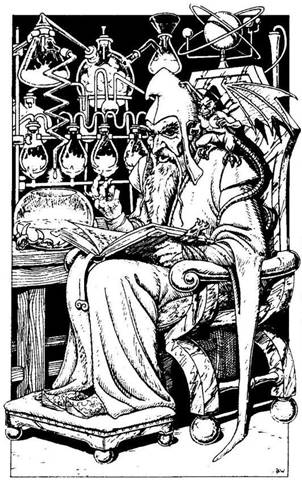
125.
A vaskulcs épp beleillik a zárba, és hangos kattanással elfordul. Megkönnyebbülten sóhajtasz fel, és belépsz az ajtón. Egy pazarul berendezett szobában piros, hosszú palástba öltözött, szakállas öregember ül előtted díszes arany trónszéken, és könyvet olvas. Az öregember vállán egy parányi, piros színű szárnyas teremtény ül, és hosszú farkát csóválva, fenyegetően tekintget körbe. Az öreg mellett jobbra egy falócán vezetékekkel összekötött különböző kémcsövekben sokféle színű folyadék bugyog. A cikcakkos csővezetékből apró csöppenként egy izzó kristálytálba csöpög a folyadék elegye. Az öreg felnéz, és nyugodt hangon így szól: - Lépj be! Nagyon csodálkozom, hogy itt látlak. A halálcsapdák ezek szerint nem elég veszélyesek a magadfajták számára. Engedd meg, hogy bemutatkozzam: a nevem Lexus. Fővarázsló vagyok, akit Sukumvit báró fogadott fel Próbamesternek az idei Bajnokok Próbájára. A próba utolsó szakaszához érkeztél, és most már csak én állok a sikered útjában. Rájöhettél, hogy a labirintusban számos aranygyűrűt rejtettek el, s végső győzelmed szempontjából döntő, hogy hányat gyűjtöttél össze belőlük. Ha az általad összegyűjtött gyűrűk száma páratlan - lapozz a 11-re. Ha a gyűrűk száma páros - lapozz a 367-re.
126.
Fogod a pompás sisakot, és a fejedre teszed. Egy pillanattal később a páncélruha megmozdul, és döcögő léptekkel, buzogányát a magasba emelve elindul feléd. Ha rátámadsz az életre kelt páncélruhára - lapozz a 10-re. Ha inkább a szemközti falban lévő ajtó felé rohansz - lapozz a 281-re.

127.
Mielőtt magadhoz térnél ámulatodból, a Tűzmanó teste a szemed láttára kezd átváltozni. Egy magas, vörös bőrű lény áll előtted nagy, bőrszerű szárnyakkal. Szarvai vannak, és pataszerű lába. Láng lövell az orrlyukaiból, egyik kezében korbácsot, a másikban lángpallost tart. Meg kell küzdened a gaz Tűzdémonnal!
Tűzdémon ÜGYESSÉG 10 ÉLETERŐ 10
A Tűzdémon nemcsak lángpallosával támad. Minden fordulóban dobj még egyszer egy kockával. Ha 1-et vagy 2-t dobsz, az orrlyukaiból kicsapó lángok miatt vesztesz 2 ÉLETERŐ pontot. Ha 3-at vagy 4-et dobsz, megüt a korbácsával, és 1 ÉLETERŐ pontot vesztesz. Ha 5-öt vagy 6-ot dobsz, sem a lángok, sem a korbács nem ér. Ha legyőzöd, lapozz a 303-ra.
128.
Rálépsz a kőlapra, mely működésbe hoz egy íjpuskát. A nyílvessző végigröpül a keskeny alagúton, és a testedbe fúródik. Dobj egy kockával. Ha 1-et dobsz - lapozz a 382-re. Ha 2-t vagy 3-at dobsz - lapozz a 145-re. Ha 4-et, 5-öt vagy 6-ot dobsz - lapozz a 39-re.
129.
Az alagút rövidesen egy sötét veremnél ér véget. Beledobsz a verembe egy követ, és csak jó néhány másodperc múlva hallod, hogy földet ért. A gödör fala teljesen sima, és így nem tudsz lemászni rajta, de beleugrani is nagy butaság lenne. Ha van nálad egy köteg mászókötél, melyet a válladon átvetve hoztál el eddig, és úgy döntesz, hogy a segítségével bemászol a verembe - lapozz a 264-re. Ha vissza kell menned az alagúton az utolsó T elágazásig, lapozz a 351-re.
130.
Felbuksz a lépcsőkön, és ekkor beleáll a hátadba a tőr. Vesztesz még 2 ÉLETERŐ pontot! Felnyögsz, és megmasszírozod sérült végtagjaidat, mielőtt visszamennél a lépcsőkön. Újra próbálkozol: ezúttal nagyobb lendületet veszel, és átugrod a piros színű lépcsőfokokat. Mire eljutsz a lépcsősor tetejére, igencsak zihálsz. Lapozz a 141-re.
131.
Amikor meglendíted láncos buzogányodat, a többi harcos közül az egyik mögéd kerül, és ő is meglendíti a fegyverét. Tedd próbára a SZERENCSÉDET! Ha SZERENCSÉD van - lapozz a 148-ra. Ha nincs SZERENCSÉD - lapozz a 210-re.

132.
Miközben megpróbálod elkerülni a csapkodó nyelvet, megcsúszol a nedves lépcsőkön, és elesel. Tedd próbára a SZERENCSÉDET! Ha SZERENCSÉD van - lapozz a 271- re. Ha nincs SZERENCSÉD - lapozz a 38-ra.

133.
Amikor benézel az alagútba, látod, hogy baloldalt a falban egy nyílás van. Hirtelen egy aprócska fej bukkan fel a sarok mögül. A hozzá tartozó test méreteiből ítélve ez is egy parányi, emberszerű lény. Odakiáltasz neki majd üldözőbe veszed, de mire a sarokhoz érsz, a lény eltűnik. Úgy döntesz, továbbmész az alagút új szárnyán, abban a reményben, hogy hátha rátalálsz a kis emberkére. Lapozz a 287-re.
134.
A Próbamester számít heves mozdulatodra, s könnyedén kivédi ütésedet. Oldalra lép, és a kezében lévő rúddal a nyakad felé döf. Dobj két kockával! Ha a kapott eredmény ugyanannyi vagy kevesebb, mint ÜGYESSÉG pontjaid száma - lapozz a 181-re. Ha a kapott összeg nagyobb, mint ÜGYESSÉG pontjaid száma - lapozz a 308-ra.

135.
A folyadék gyógyító erejű - nyersz 4 ÉLETERŐ pontot! Mivel több kijáratot nem találsz a szobából, visszamész az alagútban a T elágazáshoz. Lapozz a 232-re.
136.
Amikor a versenyek végeztével a túlélőket visszavezetik a cellájukba, észreveszed, hogy a kopasz férfi nincs köztetek. Most már csak négyen vagytok a cellában. Bár igen fáradt vagy, mégis nehezen tudsz elaludni: egyfolytában arra gondolsz, vajon mit hoz a holnap.
Másnap, miután jól megetetnek, egyenként vezetnek benneteket a küzdőtérre. Végül rád kerül a sor, és amikor az arénába vezető ajtóhoz érsz, rád parancsolnak, hogy válassz fegyvert: pallost és pajzsot vagy háromágú szigonyt és hálót választhatsz. Döntsd el, mivel harcolsz - és lapozz a 275-re.
137.
Rátaposol a kígyó farkára, s az hirtelen belemélyeszti a lábadba méregfogait. Vesztesz 4 ÉLETERŐ pontot! Kardoddal átvágod a sebet, hogy a mérgezett vér kifolyjon. Ha a kígyóméreg nem végez veled, úgy döntesz, hogy kitámolyogsz a barlangból, és visszamész a kivilágított alagútba - lapozz a 161-re.
138.
Egy létrát látsz magad előtt, amely felvezet a mennyezetben lévő lyukhoz. Ha fel akarsz mászni a létrán - lapozz a 46-ra. Ha inkább továbbmész - lapozz a 361-re.
139.
Az Orkok fegyvertelenek, mivel utolsó tőrüket is belevágták a patkányba. Amikor észrevesznek, elönti őket a méreg, és kardot ragadnak, hogy megtámadjanak.
ÜGYESSÉG ÉLETERŐ
Első Ork 6 5
Második Ork 6 6
Küzdj meg velük egyenként a kis szobában. Ha legyőzöd őket - lapozz a 295-re.
140.
A Próbamester egy ugrással megpróbálja kivédeni az ütésedet, de te kicselezed, és a bordái közé vágsz, erre elterül. Boldogan kiáltasz fel, hiszen vesztes helyzetből sikerült megnyerned ezt a rituális küzdelmet. Lapozz a 362-re.
141.
Átmész a boltív alatt a vízszintes alagútba. Alig mész harminc métert, amikor a jobb oldali fal menten sorakozó egyforma méretű és alakú agyagurnákra bukkansz. Ha meg akarod nézni, mit rejtenek az urnák - lapozz a 208-ra. Ha inkább továbbmész - lapozz a 69-re.
142.
Úgy döntesz, hogy az üstben rotyogó boszorkányfőzetet kissé megfűszerezed egy kevés Vámpír Denevérrel, hátha megmérgezed vele a boszorkányt. Körülnézel a szobában, és észreveszel egy fényesre csiszolt faládát, melynek fedelén ismerős arc képmását pillantod meg - a törpe arca tekint rád róla, aki előtted lépett be a föld alatti labirintusba. Egy könyvben pedig piros port tartalmazó kis fiolát találsz. Mit teszel?
Kinyitod a láda fedelét? Lapozz a 124-re.
Kevés port szórsz a földre? Lapozz a 171 re.
Beteszed a fiolát az övedre
erősített zacskóba? Lapozz a 300-ra.
Távozol a szobából, és
továbbmész az alagútban? Lapozz a 346-ra.
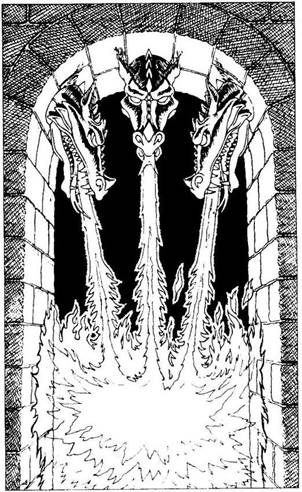
143.
Az alagút végében egy boltív van, melyet vas sárkányfejek díszítenek. Lángot lövellnek ki a szájukon, összefüggő tűzfüggönyt alkotva. Ha gyorsan át akarsz szaladni a boltív alatt - lapozz a 370-re. Ha inkább visszamész az alagúton, és kinyitod az ajtót a T elágazás mögött - lapozz a 386-ra.
144.
A folyosó ide-oda kanyarog, és úgy érzed, évszázadok óta itt bolyongsz. Egyetlen fáklya sem világítja meg az utat, így hát kitárt karral tapogatózva kell továbbmenned a koromsötétben. Cincogó, rikoltozó hangokat hallasz, és egyszer-kétszer valami puha, szőrös lény súrolja a lábadat. Te azonban nem félsz az apró rágcsálóktól, és határozott léptekkel folytatod az utadat. A lábad hirtelen belesüpped a meleg, cuppogó iszapba, amely kénes szagot áraszt. Még két lépést teszel, és a bűzös iszap már a térdedig ér. Ha tovább akarsz menni az iszapban - lapozz a 359-re. Ha inkább visszamész a folyosón, az Agyaras barlangján át végig a keskeny alagúton - lapozz a 230-ra.
145.
A nyílvessző eltalál, és a földre zuhansz. Iszonyú fájdalmat érzel a válladban, ahová a vessző beállt. Vesztesz 1 ÜGYESSÉG és 3 ÉLETERŐ pontot! Összeszorított foggal kihúzod a válladból a nyílvesszőt. Fájdalomtól eltorzult arccal bekötözöd a sebedet, és továbbmész. Befordulsz a sarkon, és körülbelül ötven métert mész, amikor egy ajtóhoz érsz, amely jobb kéz felől nyílik a falban. Ha ki akarod nyitni az ajtót - lapozz a 104-re. Ha inkább továbbmész - lapozz a 20-ra.
146.
Lenyomod a kilincset, és amikor az ajtó kinyílik, hatalmas patkány veti rád magát. A többi patkány ott vár, míg az elsőt legyőzöd.
ÜGYESSÉG ÉLETERŐ
Első Patkány 3 2
Második Patkány 2 2
Harmadik Patkány 3 2
Negyedik Patkány 3 2
Ötödik Patkány 4 2
Egyenként küzdj meg a patkányokkal. Abban a pillanatban, amikor elvesztesz egy fordulót - lapozz a 165-re. Ha az összes patkányt legyőzöd anélkül, hogy egyetlen fordulót is vesztenél - lapozz a 18-ra.
147.
A negyedik urna üres, az ötödik pedig félig van szárított virággal és különböző füvekkel. Ha ki akarod önteni az urna tartalmát a földre - lapozz a 241-re. Ha inkább továbbmész - lapozz a 69-re.

148.
Te támadsz elsőnek, és láthatatlan ellenfeled fájdalmában felordít, amikor buzogányod belevág a vállába. De nem hallod, hogy elesne. Füledet hegyezve hallgatózol, nem nyög-e fel újra. Embered azonban összeharapja az ajkát, és meg se nyikkan. Ha továbbra is ott maradsz, ahol eddig is álltál, és ismét meglendíted láncos buzogányodat - lapozz a 159-re. Ha balra lépsz - lapozz a 120-ra.
149.
Egyetlen suhintással átvágod a kardoddal a kötelet. A faláda a földre zuhan, és darabokra törik. A láda darabjai között két sárgaréz óramutatót találsz. Arra gondolsz, hogy talán egyszer még jól jönnek. Beleteszed őket a bőrzsákodba, és továbbmész. Lapozz a 388-ra.
150.
Az alagútban körülbelül harminc métert haladsz, amikor az élesen balra kanyarodik. A kanyaron túl jobbra új alagút nyílik. Meglepetten pillantasz meg egy kis emberszerű lényt, aki az új alagútban bukkan fel, de amikor észrevesz, gyorsan visszahúzódik. Odakiáltasz neki, és üldözőbe veszed, de amikor a kanyarhoz érsz, nem látod sehol. Úgy döntesz, hogy az alagút új szárnyán mész tovább, hátha rátalálsz. Lapozz a 287-re.

151.
Fogaddal kihúzod a dugót a fiolából, és tartalmát a szádba szórod. Köhögni kezdesz a piros portól, amit lenyeltél, és nagyokat köpködsz. Vesztesz 2 ÉLETERŐ pontot! Rájössz, hogy tévedtél, és eldobod a fiolát. Benyúlsz a zsákba, és ezúttal a jó fiolát veszed elő. Lapozz a 260-ra.
152.
Óvatosan rálépsz a függőhídra, és kipróbálod, vajon elbír-e. Körülnézel, de senkit sem látsz, így hát gyorsan átrohansz rajta. Lapozz a 117-re.
153.
Átugrod a piros lépcsőfokokat, de elvéted azt a lépcsőt, amelyre rá kell ugranod. Elvágódsz a kőlépcsőkön, és legurulsz a mélybe. Vesztesz 2 ÉLETERŐ pontot! Ha van nálad tőr az öved mögé dugva - lapozz a 130-ra. Ha nincs - lapozz a 284-re.
154.
Valahogy elvéted hatalmas célpontodat, és dárdád elzúg az Óriás Százlábú mellett. Káromkodva rántod elő kardodat, hogy azzal támadj az óriás szörnyre.
Óriás Százlábú ÜGYESSÉG 9 ÉLETERŐ 7
Ha legyőzöd - lapozz a 2-re.
155.
Jobb kéz felől a falban egy kis fülkét veszel észre, amelyben két égő gyertya között egy óntál áll. A tálon egy halom ínycsiklandó dió és különböző bogyó tornyosodik. Ha enni akarsz belőle - lapozz a 119-re. Ha inkább továbbmész - lapozz a 288-ra.

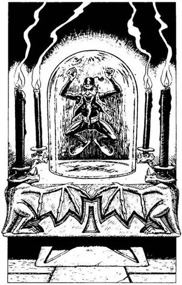
156.
Az ajtó egy keskeny, sötét folyosóra nyílik; a végében kőtalapzat tetején üvegbura áll. A talapzat mind a négy oldalán egy-egy égő gyertya van, ezek kísérteties fénnyel világítják meg az üvegburát. Amint közelebb lépsz, észreveszed, hogy a bura alatt parányi emberke ugrál le-föl, hogy magára vonja a figyelmedet. Az emberke nem magasabb fél méternél, és testhez simuló, szűk fekete nadrágot visel. Fülei hegyesek, és ősz kaporszakálla van. Mutatja, hogy emeld fel az üvegburát. Ha- megteszed, amire az emberke kér - lapozz a 199-re. Ha inkább visszamész a folyosón az alagútba - lapozz a 222-re.

157.
Úgy látod, ez az egyik rovásírás kódja lehet. Nekiállsz hát, hogy megfejtsd az üzenetet. Dobj egy kockával! Ha 1-4-ig dobsz - lapozz a 312-re. Ha 5-öt vagy 6-ot dobsz - lapozz a 344-re.
158.
Lehúzod a fogantyút, de a falak egyre jobban összezárnak. Megpróbálkozol a többi fogantyúval is, de egyik sem moccan. Kardoddal akarod feltartóztatni a falakat, de azok hirtelen összecsukódnak, és halálra zúznak.
159.
Lehajolsz, és megpróbálod alacsonyan meglendíteni láncos buzogányodat, mert abban reménykedsz, hogy ellenfeled a fejed fölött lendíti meg a sajátját. Tedd próbára a SZERENCSÉDET! Ha SZERENCSÉD van - lapozz 17-re. Ha nincs SZERENCSÉD - lapozz a 102-re.
160.
Épp hogy csak sikerül megkapaszkodnod a falban, amikor a szél feltámad. Köveket, törmeléket kap föl, de a forgószél elvonul, és te sértetlenül megúszod. Amikor a szél elcsendesedik, ismét elindulsz - lapozz a 195-re.
161.
Az alagút rövidesen ismét jobbra kanyarodik, és egy ajtóhoz érsz, amely balról nyílik. Ha ki akarod nyitni az ajtót - lapozz a 197-re. Ha inkább továbbmész - lapozz a 378-ra.
162.
Hamarosan elérkezel egy gödör széléhez, de túl széles ahhoz, hogy átugord. Ha ennek ellenére megpróbálod nekifutásból átugrani a gödröt - lapozz a 276-ra. Ha inkább visszamész az alagúton a T elágazáson túlra - lapozz a 251-re.
163.
Az ajtó egy alagútra nyílik. Amikor balra nézel, nem látsz semmit, de amikor jobbra nézel, egy aprócska, emberszerű lényt fedezel fel, aki futva menekül előled... A kis lény felkelti a figyelmedet, és utánaeredsz. Lapozz a 258-ra.
164.
Átlépsz a láthatatlan drótcsapdán, és továbbmész. Nem is sejted, hogy hajszálon múlt, hogy megmenekültél. Lapozz a 398-ra.
165.
Tedd próbára a SZERENCSÉDET! Ha SZERENCSÉD van - lapozz a 389-re. Ha nincs SZERENCSÉD - lapozz a 322-re.
166.
Nem tudsz róla, hogy a homokban, éppen a lábad előtt, egy ember fekszik. Szerencsédre nem botlottál meg benne, amikor elmentél mellette. Megállsz egy pillanatra, és hallgatózol. Hallod, amint a láncos buzogány elzúg előtted. Mit teszel?
Lábadat megvetve meglendíted
láncos buzogányodat? Lapozz a 183-ra.
Hátralépsz? Lapozz a 349-re.
Lefekszel a homokba, és elgáncsolod
a feléd közeledő ellenfelet? Lapozz a 316-ra.
167.
A barlang végében kicsiny, sötét folyosót fedezel fel; a vége a homályba vész. Ha ezen a folyosón akarsz továbbmenni - lapozz a 144-re. Ha inkább visszamész a keskeny alagútba - lapozz a 230-ra.

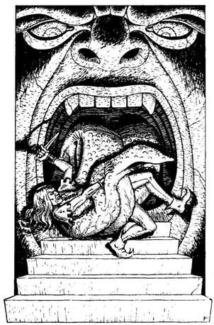
168.
Amikor benyitsz az ajtón, egy hatalmas szobába jutsz, melynek szemközti kőfalába egy arcot véstek. Lépcső vezet fel nagy, nyitott szájába, és a lépcső tetején egy versenyzőtársadat pillantod meg, aki kínlódva vergődik. Egy nagy, vörös nyelv kígyóként tekeredik az elf herceg köré, aki elkeseredetten küzd ellene a tőrével. Ha az elf herceg segítségére sietsz - lapozz a 77-re. Ha otthagyod, és inkább továbbmész az alagútban - lapozz a 138-ra.

169.
Hiába változtattál taktikát a védekezésben, semmire sem mész vele a Próbamester villámgyors támadásával szemben. Bambuszrúdjával a bordáid közé döf, és már tudod, hogy minden elveszett. Lapozz a 72-re.
170.
A Xoroa dühödt, csattogó hangjára minden bizonnyal mások is felfigyeltek a kolóniában. Ha ennek ellenére maradni akarsz, és át akarod kutatni a szobát - lapozz a 213-ra. Ha inkább visszamászol a lyukon az alagútba - lapozz a 155-re.
171.
Miközben a vén banyával versenyzel, egy kevés piros port szórsz a földre. Füst száll fel, és úgy érzed, mintha légüres térbe kerültél volna. Néhány perccel később egy kicsinyke, üres szobában találod magadat Előtted egy kilincs nélküli vasajtó van, mely be van zárva. Fogoly vagy, nincs menekvés! Csupán abban reménykedhetsz, hogy Sukumvit báró szolgái rád találnak mielőtt még éhen halsz. De fájdalommal kell közölnünk, hogy nem fognak rád találni...

172.
Bár a lábad vérzik és nagyon fáj, nem törött el. A balta ismét a levegőbe lendül, majd lecsap. Lapozz a 296-ra.

173.
A gáz nem mérgező, és rövidesen elillan. Fölemeled az agyagedényt, és a falhoz vágod. Ezúttal széttörik, valami fénylő tárgy csillan meg az agyagdarabok között a földön. Lenézel, és egy aranygyűrűt pillantasz meg. Fölemeled, és beleteszed az öveden lévő erszénybe. Mivel semmi más érdekességet nem találsz a hideg szobában, eldöntöd, merre menj tovább. Ha be akarsz menni a barlangba - lapozz a 307-re. Ha inkább visszamész az alagútba - lapozz a 150-re.
174.
Az alagút éles kanyart vesz balra, majd hurkot alkotva visszatér önmagába. Körülbelül negyven métert mész, amikor egy faajtóhoz érsz. Egy kutya alsó állkapocscsontja függ az ajtó fölött. Ha ki akarod nyitni az ajtót - lapozz a 26-ra. Ha inkább továbbmész - lapozz a 379-re.
175.
Megengedsz magadnak egy halvány mosolyt, mert megfelelő fegyvert választottál ellenfeleddel szemben. Az éles fegyverek csak kevés kárt tehetnek a Csonttörő vaskemény bőrében. Csak egyféleképpen lehet végezni vele: ha ledöntik a lábáról. Ekkor ugyanis elveszti igen érzékeny egyensúlyát, és soha többé nem lesz képes talpra állni. Óvatosan megközelíted, hogy hálóddal elfogd. Dobj egy kockával! Ha 1-3-ig dobsz - lapozz a 31-re. Ha 4-6-ig dobsz - lapozz a 189-re.
176.
- Hihetetlen - szól az öreg varázsló. - Ki gondolta volna, hogy ez lehetséges. Na, nem baj, állj fel, és kövess! - Egy ajtón át egy másik szobába vezet. A szoba teljesen üres, csak egy hosszúkás óradoboz áll az egyik falnál. Észreveszed, hogy az óra mutatói hiányoznak. Az órával szemben négy fogantyút látsz a falban. Mindegyiken ott a szám: 3, 6, 9 és 12. A varázsló néhány érthetetlen szót mormol bizalmasának, mely a válláról felröppenve a fejed fölött kezd körözni. Nézed, mint nő egyre nagyobbra a kis teremtmény, mindaddig, míg szárnya két méter átmérőjű nem lesz. - Most magadra kell hogy hagyjalak - szól Lexus, aztán kimegy a szobából, és jól bezárja maga mögött az ajtót. Amint kettesben maradtok, a Tűzördög tüzet okádva lecsap rád.
Tűzördög ÜGYESSÉG 9 ÉLETERŐ 4
Ha legyőzöd - lapozz a 127-re.

177.
Az alagút váratlanul egy T elágazásban ér véget. Jobbra-balra nézel, de nem látsz semmi érdekeset, kivéve egy ajtót, amely kissé lejjebb tőled, balra nyílik. Ha balra akarsz menni - lapozz a 68-ra. Ha jobbra akarsz menni - lapozz a 227-re.
178.
A káoszbajnokot felbőszíti, hogy nem adtad oda neki azt, amit kért tőled. Szétvetett lábbal meglengeti a levegőben tüskés buzogányát. Lapozz a 247-re.
179.
Benyúlsz a lyukon, és kezed lassan két gombot tapint ki. Az egyiken 1-es szám van, a másikon 2-es. Ha az 1-es számú gombot akarod megnyomni - lapozz a 12-re. Ha a 2-es gombot akarod megnyomni - lapozz a 214-re.
180.
Egy bőrzacskó lóg a káoszbajnok övén. A zacskóban papírdarabkát találsz, amelyre fekete tintával a következőket írták: "Második sorozat, 358." Egy csontdobozkát is találsz benne; tetejét egy koponya rajza díszíti. Ha ki akarod nyitni a dobozt - lapozz a 282-re. Ha a dobozkát a zacskóban hagyod, és inkább továbbmész az alagútban - lapozz a 44-re.

181.
Egy gyors mozdulattal sikerül kivédened a döfést. Mindketten hátraugrotok, és óvatosan kerülgetitek egymást. Ha cselesen előbb balra lépsz, majd lehajolsz, hogy elgáncsold a Próbamestert - lapozz a 223-ra. Ha inkább megvárod, hogy ő lépjen elsőnek - lapozz a 204-re.
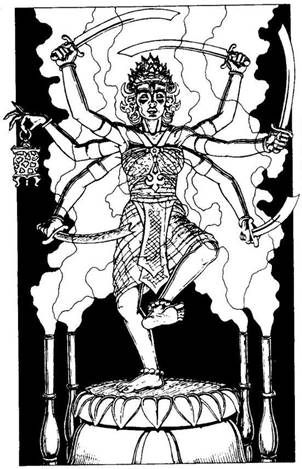
182.
A szobában márványtalapzaton egy hatkarú nőt ábrázoló hatalmas bronzszobor áll. A nőalakon díszes selyemruha van, egyik kezében sárgaréz lámpást, többi kezében pedig egy-egy görbe kardot tart. A bálvány körül elhelyezett négy csőből füst száll föl. Ha el akarod venni a rézlámpást - lapozz a 311-re. Ha inkább továbbmész az alagútban - lapozz a 109-re.
183.
Tedd próbára a SZERENCSÉDET! Ha SZERENCSÉD van - lapozz a 218-ra. Ha nincs SZERENCSÉD - lapozz a 387-re.

184.
A szárított marhahús rágós ugyan, mégis finom. Beleharapsz, és szinte rágás nélkül, nagy darabokban nyeled, olyan éhes vagy. Nyersz 4 ÉLETERŐ pontot! Végül úgy érzed, eleget ettél. Ha még nem tetted volna, most megeheted a cipót is - lapozz az 57-re. Egyébiránt itt már nincs semmi dolgod, így hát fölmehetsz a lépcsőkön - lapozz a 305-re.
185.
Erősen megmarkolod a kardodat, és bátran rátámadsz a Zombikra. Kettőt lekaszabolsz, de a többiek könyörtelenül beléd vájják karmaikat, és végül sikerül ledönteniük a lábadról. Hatalmas súlyukkal rád telepedve szétzúznak, összetörik a csontjaidat. Kalandod itt véget ér!
186.
A vén banya felnéz, és ördögi kacajjal szétszór egy kevés port a földön. Füstfelhő száll fel, és a boszorkány eltűnik. Hirtelen mozgást hallasz a fejed fölött, és épp hogy csak ki tudod rántani a kardodat, ugyanis két Vámpír Denevér veti rád magát.
ÜGYESSÉG ÉLETERŐ
Első Vámpír Denevér 5 5
Második Vámpír Denevér 5 4
Egyenként küzdj meg a denevérekkel. Ám amíg az első Vámpír Denevérrel harcolsz, a másik a hátadba csimpaszkodva a véredet szívja. Minden egyes fordulóban, amíg az első Vámpír Denevérrel harcolsz, további 1 ÉLETERŐ pontot vesztesz. Ha te győzöl - lapozz a 142-re.

187.
Óvatosan veszed el a pajzsot, vigyázva, nehogy meglökd a széket, hátha csapdába kerülsz miatta. Karodra akasztod a pajzsot. Büszke vagy új fegyveredre. Nyersz 1 ÜGYESSÉG pontot! Mit teszel?
Elveszed a szárnyas sisakot? Lapozz a 126-ra.
Megpróbálod kisilabizálni az
ajtón lévő rovásírást? Lapozz a 157-re.
Kinyitod az ajtót, és elhagyod
a szobát? Lapozz a 221-re.
188.
Hatalmas tömeg gyűlt össze a labirintus kijáratánál. Amikor megjelensz, alig hisznek a szemüknek, lelkes tapsban törnek ki, éljenezve kiabálnak. Máris üzentek Sukumvit bárónak, aki nem Számított rá, hogy bárki is előkerül a Halállabirintusból. A tömegben észreveszed Lord Carnusst, aki őreitől körülvéve, kifejezéstelen arccal áll. A gyűlölettől alig látsz, de túlságosan kimerültél ahhoz, hogy bosszút állj a Vér-sziget rabszolgáiért. Két férfi fut oda hozzád, vállukra emelnek, és a város főterére visznek, ahol az ünnepséget tartják majd. Egy emelvényre visznek, ahol párnás székre ültetnek. Időközben különböző szolgák járulnak eléd, bekötözik sebeidet, és különleges gyógyitalokkal kínálnak. Nyersz 2 ÜGYESSÉG és 6 ÉLETERŐ pontot! Végül megjelenik Sukumvit báró, hogy átadja a 20000 aranytallért. Fölállsz, hogy átvedd a díjat, de ekkor Lord Carnuss felmegy hozzátok a térről a tribün lépcsőin, és tiltakozni kezd. Ekkor Sukumvit báró meglepetten kérdezi meg gyűlölt testvérétől, hogy az miért jött Fangba. Carnuss megvetően így válaszol neki: - Azért jöttem, mert az a harcos, aki előtted áll, az én rabszolgám, és engem képvisel. Én veszem át tehát a díjat, ha megengeded! - Sukumvit báró hozzád fordul, és így szól: - Ebben az évben a győztes még egy külön-jutalomban is részesül - teljesítem egy kívánságát! Mit kívánsz, harcos? - Eljött hát a kellő pillanat! Azt válaszolod, hogy szeretnél megvívni Lord Carnuss-szal, mert elégtételt akarsz venni a rabszolgákért, akik a Vér-szigeten haltak meg. Lord Carnuss megpróbál kitérni a kihívás elől, de a tömeg kifütyüli, és nem engedi, hogy elhagyja a teret. Hozzád fordul, kihúzza a kardját, és így szól: - Legyen hát!
Lord Carnuss ÜGYESSÉG 10 ÉLETERŐ 10
Ha legyőzöd - lapozz a 400-ra.
189.
Kiveted a hálódat, mely ráborul a rövidlátó Csonttörőre. Csapkodni kezd körbe-körbe, de ezzel csak egyre jobban belegabalyodik a hálóba. Bőszen felüvölt. Mielőtt kiszabadulna, rántasz egyet a vadállaton, és a földre kényszeríted. A Csonttörő tehetetlenül, legyőzötten fekszik a lábaidnál. Megkönnyebbülten sóhajtasz fel, amikor visszavezetnek a celládba. Lapozz a 113-ra.

190.
A barlangból röfögést hallasz. A bejárat jó mélyen van, ezért ha be akarnál menni, le kellene hajolnod. Ha be akarsz menni a barlangba - lapozz a 279-re. Ha inkább továbbmész a keskeny alagútban - lapozz a 230-ra.
191.
Kiszabadítod magad, és amilyen gyorsan csak tudsz, úszni kezdesz az elbűvölő énekhang irányába. De a végzeted felé úszol. Két karodat széttárva, meggondolatlanul engedelmeskedsz a csábításnak, és mosolyogsz, amikor egy hosszú kés a mellkasodba fúródik.
192.
Az egyik Ork feléd hajítja a tőrét. Ilyen közelről nem véti el célját. Vesztesz 2 ÉLETERŐ pontot! Kihúzod a karodból a tőrt, és rátámadsz az Orkokra, akik ezúttal karddal harcolnak ellened.
ÜGYESSÉG ÉLETERŐ
Első Ork 6 5
Második Ork 6 6
Egyenként küzdj meg velük. Ha te győzöl - lapozz a 295-re.
193.
Orrodat befogva rohansz végig az alagúton, ahogy csak a lábad bírja, s abban reménykedsz, hátha meghallod a szivárgó gáz sziszegő hangját. De nem hallasz semmit, és nyugodtan folytathatod az utadat. Lapozz a 23-ra.
194.
Kardod segítségével óvatosan felemeled a láda tetejét, s benne pálmalevelekbe göngyölt zöldséget és rizst találsz. Igen éhes vagy, és az étel csábító. Ha úgy döntesz, hogy eszel - lapozz a 366-ra. Ha inkább továbbmész evés nélkül - lapozz a 47-re.
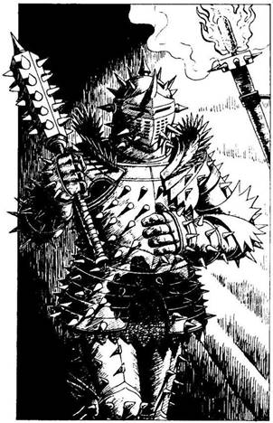
195.
Az előtted álló alak megfordul, és lassan elindul feléd. Amikor a fáklya fénye megvilágítja, látod, hogy fekete, tüskés páncélruhát visel. Ez a káoszbajnok, a versenyzők egyike, aki nagy, erős buzogánnyal a kezében feléd tart. Mit teszel?
Kardoddal védekezel? Lapozz a 247-re.
Tőröddel (ha van nálad) támadsz
ellenfeledre? Lapozz a 6-ra.
Megpróbálsz beszélni vele? Lapozz a 112-re.
196.
Talpra szökkensz, és feszülten figyelsz, nincs-e más ellenfél a közelben. Nem hallasz semmit, és balra lépsz. Lapozz a 120-ra.
197.
Amint a kilincshez nyúlsz, úgy érzed, mintha villámcsapás érne. Sikerül elkapnod a kezedet, bár iszonyúan remeg. Vesztesz 2 ÉLETERŐ pontot! Végül a remegés elmúlik, de úgy döntesz, nem próbálkozol még egyszer az ajtóval, inkább továbbmész az alagútban. Lapozz a 378-ra.
198.
A szárított virág és fű a piros hátú pók fészke. De szerencsédre észreveszed, amint épp egy pipacs szárán mászik fölfelé, és eltaposod. Semmi mást nem találsz a virágok és a fű között, így továbbmész felfelé az alagútban. Lapozz a 69-re.
199.
Amint felemeled a burát, a gyertyák fénye kialszik, és a folyosó sötétségbe borul. Nevetés visszhangzik végig a folyosón, majd szédülni kezdesz, és elveszted az eszméletedet. A Fekete Ördög tréfált meg, aki elcseni övedre erősített erszényedből minden aranyadat, és elszelel. Veszteségedet jelöld á Kalandlapodon, és vesztesz 1 SZERENCSE pontot is! Mikor végre magadhoz térsz, az ördögöt nem látod sehol, így hát visszatérsz az alagútba, és továbbmész. Lapozz a 222-re.
200.
A Próbamester észreveszi támadó szándékodat, és varázserejét alkalmazva megdobál a fakockákkal, melyek szélsebesen röpülnek feléd. Mind a hat kocka eltalál, bár megpróbálsz a kezeddel védekezni ellenük. Dobj egy kockával, és a kapott számot vond le ÉLETERŐ pontjaidból. Ha túléled a támadást, odakiáltasz Noynak, hogy engedelmeskedni fogsz neki. A fakockák azonnal visszaröppennek, és ismét a Próbamester feje körül kezdenek keringeni. Lapozz a 369-re.
201.
Ahogy lenyelsz néhány falatot, hányingered lesz. Nemcsak a romlott ételtől, hanem a Húskukac petéjétől is, amelyből hamarosan kifejlődik a féreg, és kifelé igyekszik majd a gyomrodból. Most már tudod, hogy a Dombi Troll miért csapkodta a falat: fájdalmában tette, nem pedig dühében. Lassú, gyötrelmes halálnak nézel elébe. Csüggedés vesz erőt rajtad, amikor rádöbbensz, hogy akkor is csak a halál vár rád, ha kijutsz is a Halállabirintusból. Vesztesz 2 ÜGYESSÉG és 2 SZERENCSE pontot, továbbá minden egyes új lépésnél vonj le 1 ÉLETERŐ pontot. Sorsodat átkozva, fájó hasadat fogva továbbmész. Lapozz a 211-re.
202.
Bokád csak megrándult, de nem ficamodott ki, és a fájdalom ellenére futásnak eredsz. Azt hiszed, soha nem éred utol a többieket, amikor egyikük hirtelen elzuhan a földön. A törpe az, és soha többé nem kel fel. A versenyben most szünetet tartanak, és visszavezetnek benneteket a celláitokba, a törpét pedig még a következő versenyszám előtt eltakarítják. Lapozz a 136-ra.
203.
Befogod a füledet, és torkod szakadtából ordítani kezdesz, hogy ne halld meg a Szirén énekét. Átszáguldasz a barlangon, és berohansz a mögötte lévő alagútba. Lapozz a 21-re.
204.
A fürge öregember oldalra tartott bambuszrúddal a kezében, szélsebesen rád támad. Nem tudod, hogy a rudat felemelve a fejedre húz-e, vagy az oldaladba vág-e. Ha a fejedre mért ütésre készülsz fel - lapozz a 111-re. Ha inkább a bordáidat véded - lapozz a 32-re.
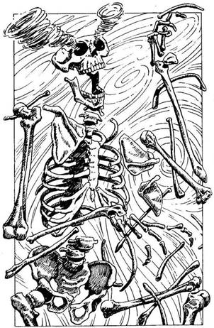
205.
Abban a pillanatban, ahogy leemeled a koponya tetejét, hideg széllökés vet hátra. A szél iszonyú gyorsasággal söpör végig a barlangon, s a csontok hirtelen megzörrennek. Néhány közülük átsiklik a földön, és fölemelkedve csontvázzá áll össze. Földbe gyökerezik a lábad, amikor látod, hogy a koponya szemüregeiből két parányi kavargó forgószél tör elő. Borzalommal tölt el a felismerés, hogy a Csontördög halhatatlan szellemét szabadítottad ki. Ha van a nyakadban medál - lapozz a 63-ra. Ha nincs - lapozz a 384-re.
206.
A nehéz mellvért súlya lehúz, amikor megpróbálod átugrani a lépcsőfokokat. Dobj két kockával! Ha a kapott összeg ugyanannyi vagy kevesebb, mint ÜGYESSÉG pontjaid száma - lapozz a 342-re. Ha a kapott összeg nagyobb, mint ÜGYESSÉG pontjaid száma - lapozz a 153-ra.

207.
Amíg az ajtó zárjával vesződsz, nem veszed észre, hogy az első csontváz mutatóujja megmozdul. Villám csap ki belőle, és belevág a hátadba. Azonnal megöl.

208.
Az első urna üres, sőt a második is, de a harmadikban egy bíborszínű palást van. Mit teszel?
Magadra öltöd a palástot? Lapozz az 53-ra.
Megnézed, mit rejt a negyedik
és az ötödik urna? Lapozz a 147-re.
Nem nyúlsz az urnákhoz, és
továbbmész? Lapozz a 69-re.

209.
Felnyitod a nyeregtáskát, és egy tükröt meg egy fasípot találsz benne. Zsákodba teszed őket, és továbbmész az alagúton. Nemsokára egy T elágazáshoz érsz. Ha balra akarsz továbbmenni - lapozz a 129-re. Ha jobbra mész - lapozz a 351-re.
210.
Felordítasz a fájdalomtól, amikor ellenfeled tüskés buzogánya a karodat éri. Dobj egy kockával! Ha 1-3-at dobsz - lapozz a 380-ra. Ha 4-6-ot dobsz - lapozz a 393-ra.

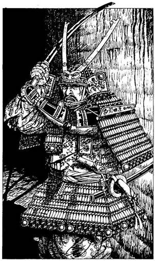
211.
Az alagút hamarosan véget ér. Nem látsz semmiféle titkos átjárót, ezért aztán megfordulsz, és ekkor meglepetten veszed észre egyik társadat, aki éppen rád vadászik. Ez a keleti hadúr, akinek megtépázott harci öltözékét vér borítja. Kardját a magasba emelve, gyilkos pillantással, gyors, határozott léptekkel indul el feled.
Keleti Hadúr ÜGYESSÉG 10 ÉLETERŐ 9
Ha legyőzöd - lapozz a 354-re.
212.
Az undorító külsejű nő a párnák alól, amelyeken ül, egy vaskesztyűt húz elő, és a földre dobja. Lehajolsz, és fölveszed, majd ráhúzod a jobb kezedre, amelybe iszonyú fájdalom hasít, és szétárad egész testedben. Úgy érzed, mintha egy hatalmas satu zúzott volna össze, és a fájdalomtól felordítasz. Dobj három kockával! Ha a kapott összeg ugyanannyi vagy kevesebb, mint ÜGYESSÉG pontjaid száma - lapozz a 15-re. Ha a kapott összeg nagyobb, mint ÜGYESSÉG pontjaid száma - lapozz a 80-ra.
213.
A földön egy faragott szarukürtöt találsz. Ha bele akarsz fújni - lapozz a 259-re. Ha inkább a nyakadba akasztod a kürtöt, és visszamászol a lyukon az alagútba - lapozz a 155-re.
214.
Elsötétül előtted a világ, és amikor magadhoz térsz, a Halállabirintus bejáratánál találod magad. Az összegyűlt tömeg gúnyolni kezd és kifütyül. Köveket hajítanak feléd. Dobj egy kockával, és a kapott számot vond le ÉLETERŐ pontjaidból. Amikor látod, mi történik, megfordulsz, és visszamész a labirintusba. Elhaladsz a bal oldaladon lévő ajtó mellett, és a T elágazás felé veszed az utadat. Ha ott aztán balra fordulsz - lapozz a 229-re. Ha jobbra mész - lapozz a 304-re.

215.
Jó negyedóra megy el azzal, hogy elhordod a sziklákat. Végül lenyomod a kilincset, és belököd az ajtót a válladdal. Az öreg, rozsdás ajtó csikorogva kinyílik, és egy nyirkos, dohos, régóta lezárt alagútban találod magad. A félhomályban alig látsz messzebb az orrodnál, de amikor a szemed megszokja a sötétet, látod, hogy az alagút mennyezete beomlott, és továbbjutni nem lehet. Az ajtó túloldalára krétával különböző szavakat és számokat írtak, de a sötétben nem tudod elolvasni. Ha a központi alagútból hozol egy fáklyát, hogy megvilágítsd vele a kiírást - lapozz a 394-re. Ha inkább elfelejted az elhagyott alagutat, és a T elágazás másik szárnyán lévő ajtóhoz mész - lapozz a 375-re.
216.
Nagyot nyekkensz a gödör mélyén, s csak egy hajszálon múlik, hogy sikerül elkerülnöd a földből kiálló hegyes végű karókat. Bokád kificamodott, de szerencsére semmid nem tört el. Vesztesz 1 ÜGYESSÉG és 1 ÉLETERŐ pontot! Felnézel, és Liche Királynőt pillantod meg, amint téged néz a mélyben. Ledob valamit a verembe, ami fémes zörgéssel ér földet. A Királynő vaskesztyűje az, és már tudod, hogy nem tudsz kitérni a kihívás elől. A verem oldalából kövek állnak ki, így ki tudsz mászni. Amikor már kinn vagy, Liche Királynő megparancsolja, hogy húzd fel a kesztyűt, amit felhoztál magaddal a mélyből. Nem tudsz mit csinálni. Amint felhúzod a kesztyűt, iszonyú fájdalmat érzel a kezedben, mely csakhamar átterjed egész testedre. Úgy érzed, mintha satuba szorítottak volna, és fájdalmadban ordítani kezdesz. Dobj három kockával! Ha a kapott összeg ugyanannyi vagy kevesebb, mint ÜGYESSÉG pontjaid száma - lapozz a 15-re. Ha a kapott összeg nagyobb, mint ÜGYESSÉG pontjaid száma - lapozz a 80-ra.
217.
Átlépsz a kutyán, felnyúlsz a polcra, és leveszed a dobozt. Kardoddal lefeszíted a tetejét, és egy vörösréz karperecet találsz benne. Ha fel akarod húzni a karperecet - lapozz a 317-re. Ha nem nyúlsz hozzá, és inkább elhagyod a szobát - lapozz a 379-re.
218.
Láncos buzogányod éppen halántékon találja szerencsétlen ellenfeledet. Elterül a földön, és nem mozdul többé. Feszülten figyelsz, majd óvatosan balra lépsz. Lapozz a 120-ra.
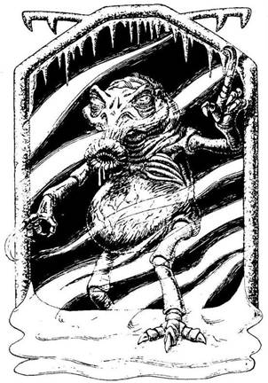
219.
A lakatlan szobában sokkal hidegebb van, mint az alagútban. Dideregni kezdesz, és leheleted apró kis felhőket képezve úszik a levegőben. A szoba túlsó végében egy nagy alagútnyílást látsz, ahonnan lassan közeledő leptek zaját hallod, amelyet hosszú, mély, sziszegő hang kísér. Nem futamodsz meg, kivont karddal vársz, s ekkor a szobában egy undorító vadállat jelenik meg. Zöld foltokkal teli pocakja van, olyan, akár egy hatalmas varangyos béka, feje furcsa és ormótlan, nyaka kövér és ráncos, szája hosszan előrenyúlik, piros ajkait éles fogak szegélyezik: ez a szörny felvágja áldozata hasát, és kiszívja a beleit. A Hidegkaromnak a friss belsőség a kedvenc csemegéje, és most éppen a tiédre pályázik, hogy így büntessen, amiért megzavartad nyugalmát.
Hidegkarom ÜGYESSÉG 10 ÉLETERŐ 11
Miközben a gonosz vadállat feléd cammog, a levegő még jobban lehűl. Csökkentsd ÜGYESSÉGEDET 1 ponttal, de csakis erre az összecsapásra. Ha legyőzöd - lapozz a 252-re.
220.
Amilyen hangosan csak tudod, a varázsló nevét kiáltod, de választ nem kapsz. Közben a falak egyre összébb záródnak, és már csak körülbelül négy méterre vannak egymástól. Elkeseredésedben úgy döntesz, hogy meghúzod az egyik fogantyút. Lapozz a 48-ra.
221.
Egy másik szobába jutsz, és meglepődsz az eléd táruló látványtól - lapozz a 3-ra.
222.
Amint mész az alagútban, megbotlasz egy halom kőben. A kövek alatt valami megcsillan. Óvatosan felemelsz néhány követ, és ekkor megpillantasz egy borotvaéles, pompás pallost. Ha kardod helyett inkább a pallost használnád - lapozz a 240-re. Ha nem nyúlsz a palloshoz és inkább továbbmész - lapozz a 7-re.
223.
A Próbamester igen gyakorlott harcos, és előre kiszámítja minden lépésedet. Meglepi azonban fürgeséged, és a magasba kell ugrania, hogy kivédje bambuszrudadat. ÜGYESSÉG pontjai száma 8. Dobj két kockával! Ha a kapott összeg ugyannyi vagy kevesebb, mint az ő ÜGYESSÉG pontjainak a száma - lapozz a 40-re. Ha a kapott összeg nagyobb, mint ÜGYESSÉG pontjainak a száma - lapozz a 256-ra.

224.
Az ezüstdoboz egy ezüstműves remeke, amit azonban szándékosan helyeztek ide. Ez egy életelszívó doboz, és nem egészen két perc alatt ugyanarra a sorsra jutsz, mint a goblin.

225.
Nem veszed észre az ogre lábát, megbotlasz benne, és elvágódsz a homokban. Sietve felpattansz, és amilyen gyorsan csak tudsz, nekiiramodsz, hogy behozd a többieket. Vesztesz 2 ÉLETERŐ pontot! Körbe-körbe futtok az arénában, és összeszorított foggal ugrálod át az izzó parázshalmokat. Húsz perce futtok már egy bolyban, amikor az egyik északi ember kiugrik, és nagyobb sebességre kényszerít benneteket. Dobj két kockával, és a kapott számhoz adj hozzá 3-at, ha az őrök megkorbácsoltak. Ha a kapott összeg Ugyanannyi vagy kevesebb, mint ÜGYESSÉG pontjaid száma - lapozz a 360-ra. Ha a kapott összeg nagyobb, mint ÜGYESSÉG pontjaid száma - lapozz a 250-re.
226.
Jóval a verem túloldala előtt zuhansz be a csaknem húszméteres mélységbe. A láthatatlan szájak könnyűszerrel felfalják összezúzott testedet.
227.
Nemsokára egy barlang szájához érsz, amely az alagútból balra nyílik. Belesel, de a sötétben semmit sem látsz. A barlang mélyéből hirtelen hangos segélykiáltást hallasz. Ha be akarsz menni, hogy megnézd, ki kiabál - lapozz a 37-re. Ha inkább továbbmész az alagútban - lapozz a 397-re.
228.
Az alagút balra kanyarodik előtted, és morgó, nehézkesen szuszogó hangokat hallasz a kanyaron túlról. Nyugodtan odasétálsz a kanyarhoz, körülnézel, és ekkor egy hosszú karmú, éles fogú, undorító lényt pillantasz meg, aki dühösen veri a falat. Ez egy Dombi Troll, a Trollok legnagyobb és legveszedelmesebb fajtája. Úgy döntesz, hogy odalopódzol hozzá, amíg mással van elfoglalva. Tedd próbára a SZERENCSÉDET! Ha SZERENCSÉD van - lapozz a 381-re. Ha nincs SZERENCSÉD - lapozz a 79-re.
229.
Körülbelül harminc méter megtétele után látod, hogy a szikla mennyezetében lévő lyukakból körülbelül húsz dárda szegeződik rád. Körülnézel a földön, hátha észreveszel valamiféle huzalcsapdát, amely működésbe hozhatja őket, de semmi ilyesmit nem látsz. Ha tovább akarsz menni - lapozz a 390-re. Ha inkább visszafordulsz, és visszamész a T elágazásig - lapozz a 304-re.

230.
A szél az arcodba vág, és egyre erősebben fúj - alig bírsz megállni a lábadon. Kétségbeesetten kapaszkodsz bele a falban lévő egyik repedésbe, amikor egy kis forgószél söpör végig az alagúton. Dobj két kockával! Ha a kapott összeg ugyanannyi vagy kevesebb, mint ÜGYESSÉG pontjaid száma - lapozz a 160-ra. Ha a kapott összeg nagyobb, mint ÜGYESSÉG pontjaid száma - lapozz a 337-re.
231.
Félrebeszélsz, amint a méreg szétterjed a testedben. Térdre rogysz, és ájultan terülsz el. Soha többé nem térsz magadhoz.

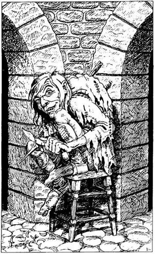
232.
Az alagút enyhén jobbra kanyarodik, majd két boltíves kőnyíláshoz érsz. Rongyokba öltözött, púpos ember ül a két boltív között egy széken, és éppen egy botnak a végét hegyezi. Meglepődik, amikor meglát, és így szól: - Hát, nem gondoltam volna, hogy bárki is eljut idáig. A Halállabirintus vége felé jársz. Menj tovább a tőlem balra lévő alagúton, és öt perc múlva eljutsz a kijárathoz. - Ha megfogadod a púpos tanácsát - lapozz a 291-re. Ha inkább a tőle jobbra lévő alagúton mész tovább - lapozz a 28-ra.
233.
A csizma remekül illik a lábadra, és fürgén, biztos léptekkel járkálsz benne a barlangban. Az elfek Gyorsaság Csizmája van a lábadon! Nyersz 1 ÜGYESSÉG pontot! Ha kutatsz még egy keveset abban a reményben, hogy talán találsz valami mást is - lapozz a 272-re. Ha visszamész az alagútba - lapozz a 150-re.
234.
A Vérféreg feje előrelendül, és megpróbálja szájkampóit a húsodba mélyeszteni, hogy a véredet szívhassa. Te azonban ügyesen ellépsz előle, és kardoddal a hosszúra nyúlt test felé suhintasz. A megsebzett Vérféreg felemelkedik, és megpróbál ismét beléd akaszkodni.
Vérféreg ÜGYESSÉG 4 ÉLETERŐ 4
Ha egyetlen fordulóban is vesztesz, a vérveszteség miatt minden további fordulóban automatikusan 2 ÉLETERŐ pontot vesztesz, még akkor is, ha azokat megnyered. Ha te győzöl - lapozz a 123-ra.
235.
Az ajtó egy üres szobába nyílik. Amikor óvatosan belépsz, az ajtó szép lassan becsapódik mögötted. Rejtett kijárat után kutatsz a szobában, de hiába. Legnagyobb meglepetésedre az ajtó enged, amikor megpróbálod kinyitni, és kimész rajta az alagútba. Azt azonban nem tudod, hogy egy olyan szobában voltál, mely teleportált. Épp ezért már nem abban az alagútban vagy, amelyen eddig eljöttél. Mit sem sejtve arról, hogy teleportálódtál, továbbmész az alagútban - lapozz a 378-ra.
236.
Lebuksz a víz alá, és elúszol a sziklától, hogy minél távolabb kerülj a Szirén hangjától. Amikor a partra érsz, kezeddel betapasztod a füledet, és úgy rohansz át a barlangon, majd a félelmetes Szirén elől menekülve beszáguldasz az alagútba. Lapozz a 21-re.

237.
A keletivel vívott ádáz küzdelmed után nekidőlsz a cella falának, és olyan fáradt vagy, hogy azonnal elnyom az álom. Amikor másnap reggel a többi túlélővel a küzdőtéren gyülekeztek, már csak tizenketten vagytok. A nap első próbáján egy gyilkos gépezettel kell megküzdened: villámgyors reakcióra és kötélidegekre lesz szükséged, hogy túléld. Ez a gép egy szilárd talapzatba állított pózna, amelynek tetejéhez fejmagasságban és az aljához bokamagasságban egy-egy éles pengét erősítettek. Egy rabszolgának oda kell állnia a pózna mellé, amit egy őr forgat körbe. A rabszolgának hol le kell buknia, hol pedig fel kell ugrania, nehogy az éles penge megvágja. Utolsónak kerül rád a sor: kilencen élték túl a próbát, kettőnek a penge átvágta a nyakát. Odaállsz a pózna mellé. Szíved a torkodban dobog. Az őr forgatni kezdi a póznát, te pedig lebuksz, majd a magasba ugrasz. Dobj két kockával! Ha a kapott összeg ugyanannyi vagy kevesebb, mint ÜGYESSÉG pontjaid száma - lapozz a 94-re. Ha a kapott összeg nagyobb, mint ÜGYESSÉG pontjaid száma - lapozz a 324-re.

238.
Eszedbe jut, miként tűnt el a vén szipirtyó, aki szétszórta a port a földön, és úgy döntesz, hogy te is ezt teszed, mivel kétségbeesetten próbálsz menekülni. Kihúzod a dugót a fiolából, és tartalmát a földre szórod. Füstfelhő száll föl, és hirtelen olyan érzésed támad, mintha légüres térbe kerültél volna. Néhány másodperc múlva egy üres kis szobában találod magad. Előtted egy vasajtó áll, amely be van zárva, viszont kilincs nincs rajta. Ha van nálad egy vaskulcs - lapozz a 125- re. Ha nincs - lapozz a 266-ra.
239.
Jobb kezedet előrelendíted, hogy belevágj a Próbamester nyakába, aki a kezében lévő rudat gyorsan keresztben maga elé tartja, hogy kivédje ütésedet. ÜGYESSÉG pontja 8. Dobj két kockával! Ha a kapott összeg ugyanannyi vagy kevesebb, mint az ő ÜGYESSÉG pontszáma - lapozz a 248-ra. Ha a kapott összeg nagyobb, mint az ő ÜGYESSÉG pontszáma - lapozz a 298-ra.

240.
A pallos remek, sőt mi több, mágikus erejű fegyver, amit híres fegyverkovács készített. Megsuhintod a levegőben, majd folytatod az utadat. Lapozz a 7-re.
241.
Kiborítod az urna tartalmát, aztán kutatni kezdesz a virágok és füvek között. Tedd próbára a SZERENCSÉDET! Ha SZERENCSÉD van - lapozz a 198-ra. Ha nincs SZERENCSÉD - lapozz a 33-ra.
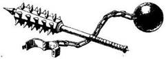
242.
A szoba padlója hirtelen megmozdul, és lassan emelkedni kezd. Hallod a csikorgást, és pánikba esel, mert a padló már-már eléri a mennyezetet. Kénytelen vagy lefeküdni, és megpróbálod a kardoddal kitámasztani a padló meg a mennyezet közötti részt, de hiába. Kardod, akár egy vessző, meghajlik, és egy perc múlva a padló a mennyezethez présel. Véged van!
243.
Térdig süppedsz a sűrű, barna iszapban. A Vérféreg sötétbarna teste körülbelül nyolc méter hosszú, és összetekeredve fekszik bűzös fészkében. Kardoddal többször is beledöfsz az iszapba, és egyszer csak valami kemény tárgyat érsz. Lenyúlsz, és egy dugóval bezárt üveget emelsz ki. Letörlöd róla az iszapot, és ekkor látod, hogy az üveg zöld. Az üvegben egy kis cédula van. A következő áll rajta: "A sziklahalom mögött egy ajtó van." Ebből ugyan nem sokat értesz, de megjegyzed. Minthogy semmi egyebet nem találsz itt, kimászol a fészekből, és továbbmész az alagúton - lapozz a 174- re.
244.
Sebtében célzol, és az óriás szörny felé hajítod a dárdát. Dobj két kockával! Ha a kapott összeg ugyanannyi vagy kevesebb, mint ÜGYESSÉG pontjaid száma - lapozz a 290-re. Ha a kapott összeg nagyobb, mint ÜGYESSÉG pontjaid száma - lapozz a 154-re.
245.
A szűk kőszájban sikerül valahogy megtartanod az egyensúlyodat. Lapozz a 8-ra.
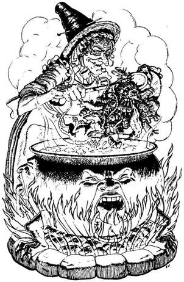
246.
Amint kinyitod az ajtót, meleg levegő csap meg. Hirtelen azt hiszed, hogy csapdába kerültél, de ekkor a szoba közepén egy katlant veszel észre, amely alatt tűz lobog. Egy vénasszony patkányokat, meztelen csigákat, kukacokat és százlábúakat hajigál bele a gőzölgő katlanba. Szemmel láthatóan jól érzi magát. Ha be akarsz menni a szobába - lapozz a 186-ra. Ha inkább becsukod az ajtót és továbbmész az alagútban - lapozz a 346-ra.
247.
A hollófekete páncélruhát viselő káoszbajnok olyan, akár egy élő harci gép, hisz születésétől fogva ölésre nevelték. Csatakiáltása végigzúg az alagúton, amikor rohamra indul.
Káoszbajnok ÜGYESSÉG 11 ÉLETERŐ 12
Ha legyőzöd - lapozz a 180-ra.
248.
A Próbamester ügyesen kivédi ütésedet. Homlokát kiveri a veríték, amikor látja, hogy jobb harcos vagy, mint gondolta. Fölényedet kihasználva újra támadsz. Ha a testére akarsz egy ütést mérni - lapozz a 320-ra. Ha a fejére akarsz rávágni - lapozz a 385-re.
249.
Az öreg varázsló mosolyogva így szól: - Remek! És most a másik hármat! - Ha tudod, mi a következő három szám - lapozz oda. Ha nem tudod - lapozz a 286-ra.
250.
A kövek súlya alatt egyre fogy az erőd, és amikor ismét át kell ugranod a tüzes parázskupac fölött, földet érés közben kificamítod a bokádat, és elzuhansz a homokban. Miközben megpróbálsz talpra állni, látod, hogy a többiek mind lehagytak. Több mint fél körrel előtted futnak már, amikor bicegve utánuk eredsz. Dobj egy kockával! Ha 1-5-ig dobsz - lapozz a 86-ra. Ha 6-ot dobsz - lapozz a 202-re.
251.
A bal oldali falban lévő boltíven át egy keskeny folyosóra látsz, melynek végében egy sárgaréz harang lóg le a falról. Ha meg akarod kongatni a harangot - lapozz a 90-re. Ha inkább folytatod az utadat -- lapozz a 333-ra.
252.
A szobát már jó régen elhagyta a Hidegkarom, akinek a barlangja innen nyílik. Néhány töredezett bútordarab maradt csak utána; ezek szanaszét hevernek a szobában. Mindent vastag szürke por takar. A szoba sarkában a törmelékkupac alatt egy régi agyagedényt találsz, melynek tetejét viasszal zárták le. Mit teszel?
Széttöröd az edényt? Lapozz a 115-re.
Bemész a barlangba? Lapozz a 307-re.
Távozol a szobából, és
továbbmész az alagútban? Lapozz a 150-re.
253.
Lábad vérzik és fáj, sőt el is tört. Vesztesz 4 ÜGYESSÉG pontot! A balta ismét felemelkedik, majd lecsap, de szerencsére a fatönkbe áll bele. Végre el tudod engedni a balta nyelét, és elláthatod törött lábadat, amennyire tőled telik. Szerencsére csak a csontod törött el. Levágsz egy hosszú szilánkot a fatönkből, és odakötözöd sérült lábadhoz. Bár jelentős hátrányt szenvedtél, utadat mégis folytatni tudod. Ha kardoddal át akarod vágni a kötelet - lapozz a 149-re. Ha inkább továbbbicegsz az alagútban - lapozz a 388-ra.
254.
Minden erődet összeszedve megpróbálsz kiszabadulni a sűrű pókhálóból. A pók ismét beléd csíp. Vesztesz 2 ÉLETERŐ pontot! Dobj két kockával! Ha a kapott összeg ugyanannyi vagy kevesebb, mint ÜGYESSÉG pontjaid száma - lapozz a 108-ra. Ha a kapott összeg nagyobb, mint ÜGYESSÉG pontjaid száma - lapozz a 293-ra.
255.
Átkozódsz, amikor hálód ismét üresen terül szét a földön. Vesztesz 1 SZERENCSE pontot! Dobj két kockával! Ha a kapott összeg ugyanannyi vagy kevesebb, mint ÜGYESSÉG pontjaid száma - lapozz a 66-ra. Ha a kapott összeg nagyobb, mint ÜGYESSÉG pontjaid száma - lapozz a 334-re.
256.
Az öreg egy hátraszaltót kísérel meg, abban a reményben, hogy így megmenekül, de ügyetlenül esik. Kihasználod a kedvező alkalmat, és megcélzod a rúddal a bordáit. Ütésed talál, és boldogan kiáltasz fel. Meglepő győzelmet arattál az ügyes Próbamester fölött. Lapozz a 362-re.
257.
Hiába húzod le a fogantyút, a falak egyre jobban összezáródnak. Megpróbálsz lenyomni egy másik fogantyút is, de egyiket sem bírod megmozdítani. Ekkor a kardodat dugod be a két fal közé, de azok gyorsan összezáródnak, és téged is összeroppan-tanak.
258.
Az emberszerű lény eltűnik a sarkon, és miközben jobbra kanyarodsz, már sehol sem látod. Lefelé mész az alagútban, míg egy ajtóhoz nem érsz, amely a falban balról nyílik. Ha ki akarod nyitni az ajtót - lapozz a 353-ra. Ha nem akarsz itt megállni - lapozz a 133-ra.

259.
A kürtöt, amelybe belefújsz, a Xoroák használják, hogy így figyelmeztessék a többieket a veszély közeledtére. Négy másik Xoroa ront be a terembe, mindegyiknél rövid lándzsák, dárdák vannak. Bosszút akarnak állni az elesett harcoson.
ÜGYESSÉG ÉLETERŐ
Első Xoroa Harcos 10 10
Második Xoroa Harcos 9 11
Harmadik Xoroa Harcos 10 11
Negyedik Xoroa Harcos 10 10
Ha valahogy sikerül legyőznöd az összes Xoroát - lapozz a 14-re.
260.
Kihúzod a dugót a fiolából, és egy szuszra kiiszod a tartalmát. Remegésed azonnal megszűnik, mert a folyadék azonnal közömbösítette a mérget. Amikor már elég erősnek érzed magad, hogy folytasd az utadat, visszamész az átjárón, amíg egy lyuk elé nem érsz, amely a földben tátong a lábad előtt. Leereszkedsz a lyukon, és egy újabb alagútba jutsz. Lapozz a 315-re.
261.
A délvidéki ember a hasát fogva térdre rogy, és haldokolva a következőket mondja: - Szerencse kísérjen a labirintusban, idegen. Ha egyszer majd lehetőséged nyílik rá, hogy kettesben maradj Carnuss-szal, ne feledkezz meg rólunk, akik itt haltunk meg az ő arénájában. - A délvidéki arca eltorzul a fájdalomtól, majd a férfi némán elzuhan. Megfogadod, hogy bosszút állsz halott rabszolgatársaidért, és ha túléled Fang Halállabirintusát, megölöd Lord Carnusst. Ezen az estén Lord Carnuss nagyra becsült vendége vagy, és minden szeszélyedet kiélheted. Finom falatokkal tömöd meg a bendődet, és késő éjszakáig szórakozol. Egy hétig tartó pazar élet után visszatér az erőd. ÉLETERŐ pontjaidat állítsd vissza a Kezdeti értékükre. Ekkor, bilincsbe verve, hajóra szállsz Lord Carnuss-szal és harminc testőrével, majd tíz nap múlva megérkezel Fangba, hogy ott részt vegyél az idei Bajnokok próbáján. A Városban nyüzsög a nép, mindenki kíváncsi a próbára, és ünnepelni akar. Ennek ellenére te mégsem élvezheted Sukumvit báró vendégszeretetét, ugyanis április 30. van, késő este, a próba pedig holnap kora hajnalban kezdődik. Az éjszakát egy pincében töltöd az őrök figyelő szeme előtt, hajnalban pedig odavezetnek a Halállabirintus bejáratához. A bejáratnál két díszesen faragott, démonokat, isteneket és közöttük tekergő kígyókat ábrázoló kőpillér áll. Látod, amint Sukumvit báró kezet ráz a többi résztvevővel - a tüskés fekete páncélruhát viselő káoszbajnokkal, a harci szerelést viselő keleti hadúrral, az elf herceggel és a törpe nemessel. Az idei díj illusztris versenyzőket csábított a versenyre. Odaállsz közéjük, és ekkor felszólítanak, hogy válassz egy bambuszbotot azok közül, amelyeket a báró tart a kezében. A boton a 2-es számjegy van: másodiknak mész be a labirintusba, a törpe után. Az ujjongó nézősereg éljenzése közepette áthaladsz a két pillér között, kezedben egyetlen fegyvereddel, a Lord Carnuss által neked adományozott nagyszerű karddal. Nincs sem hátizsákod, sem élelmed, sem páncélruhád, így aztán eléggé felkészületlennek érzed magad a rád váró megpróbáltatásokkal szemben, de legalább veled van ez a remek kard meg egy bőrerszény, melyet az övedhez erősítettél. A tömeg éljenzése lassan elhal mögötted, amint egyre beljebb jutsz a gyéren megvilágított alagútban. Nehéz elképzelned, hogy milyen szörnyűségek várnak rád, de azt tudod, hogy Sukumvit báró az elmúlt évet azzal töltötte, hogy átépítse Halállabirintusát, amelyről az a hír járja, hogy minden képzeletet felülmúlóan veszedelmes. Mégis a győzelem reményével tölt el a vágy, hogy megbosszuld rabszolgatársaid halálát. Jó negyven méteren át egyenesen haladsz az alagútban, majd egy ajtóhoz érsz, amely bal kéz felől nyílik a falban. Vérrel írták rá a következőket: "Belépni tilos." Az ajtó mögül kaparászást, fújtatást hallasz. Ha kardot rántasz és benyitsz az ajtón - lapozz a 374- re. Ha inkább továbbmész az alagúton - lapozz a 82-re.
262.
Még egyszer fölemeled a lámpást. Csodában reménykedve, erősen megdörzsölöd. Nem történik semmi, de zörgést hallasz a belsejéből. Leemeled a tetejét, és egy aranygyűrűt találsz benne. Elteszed a gyűrűt az erszényedbe, és kimész a szobából, vissza az alagútba. Lapozz a 109-re.

263.
A folyosó teljes sötétségben kanyarog tovább. Egyszer csak fény villan egy földben lévő lyukból. Amikor a lyuk fölé állsz, látod, hogy lent egy sokkal szélesebb alagút húzódik. Ha le akarsz ugrani a lenti alagútba - lapozz a 315-re. Ha tovább akarsz menni a sötét folyosón - lapozz a 289-re.
264.
A kötél egyik végét odakötözöd a verem szélén meredező, kiálló sziklához. Jól meghúzod, majd bemászol a verembe, és a kötélbe kapaszkodva lecsúszol a mélybe. A verem aljából újabb alagút vezet tovább, ez kissé talán keskenyebb, mint a fönti. Ha az új alagútban akarsz továbbmenni és hátrahagyod a kötelet - lapozz a 190- re. Ha inkább visszamászol, és a kötelet eltéve továbbmész az alagúton a T elágazás felé - lapozz a 351-re.
265.
Rémült, torz grimasz fagy az arcodra, amint tehetetlenül nézed, hogyan nyúl be mellkasodba csontujjaival a Csontördög. Azonnal meghalsz, amikor kirántja a szívedet, és a Démonnak adja, hogy az majd felzabálja.

266.
Egyik börtönödből megszabadulva most egy másikba jutottál. A szobából nincs kijárat, és csupán egyet tehetsz: elgondolkodhatsz azon, vajon mi történt volna, ha egy másik utat választasz. A Halállabirintus csapdái újabb áldozatot követeltek.
267.
A Próbamester megkísérli kihasználni veled szemben helyzeti előnyét, mivel állandóan védekezel. Felugrik, hogy megvívja veled élethalálharcát. Rudadat felfelé tartva kétségbeesetten próbálod meg feltartóztatni, amikor rád veti magát. Dobj két kockával! Ha a kapott összeg ugyanannyi vagy kevesebb, mint ÜGYESSÉG pontjaid száma - lapozz a 140-re. Ha a kapott összeg nagyobb, mint ÜGYESSÉG pontjaid száma - lapozz a 274-re.
268.
Hihetetlen gyorsasággal a Csonttörő lábánál teremsz, és megsuhintod a kardodat a levegőben. Az ötödik csapásra sikerül átvágnod jobb bokájának Achilles-inát, és ekkor a Csonttörő elterül a földön. A kimerültségtől és a megkönnyebbüléstől hevesen zihálsz, amikor visszavezetnek a celládba. Lapozz a 113-ra.
269.
A megvadult balta ismét lecsap, ezúttal azonban a lábadba hasít. Vesztesz 2 ÉLETERŐ pontot, és tedd próbára a SZERENCSÉDET! Ha SZERENCSÉD van - lapozz a 172-re. Ha nincs SZERENCSÉD - lapozz a 253-ra.
270.
Két kézzel megmarkolod a kardodat, és megtámadod a szörnyet.
Óriás Százlábú ÜGYESSÉG 9 ÉLETERŐ 7
Ha legyőzöd - lapozz a 2-re.

271.
Lezuhansz a lépcsőkön, de nem sérülsz meg. Felpattansz, és ismét megtámadod az undorító nyelvet. Lapozz a 8-ra.

272.
A barlang egyik eldugott sötét zugában nagy, aranyszínűre festett koponyát találsz. A szemgödrök, az orrlyukak, valamint a szájnyílás be van fedve. A koponya tetejének egy darabját kivágták, majd visszahelyezték és átfestették. Ha le akarod emelni a koponya tetejének ezt a részét - lapozz a 205-re. Ha inkább kimész a barlangból, és tovább folytatod az utadat az alagútban - lapozz a 150-re.
273.
Az ital árt az egészségednek. Vesztesz 4 ÉLETERŐ pontot! Mivel más kijáratot nem találsz a szobából, visszamész az alagútba, és elindulsz a T elágazás felé. Lapozz a 232-re.

274.
A Próbamester ugrás közben lábával kivédi a rudadat, és fejbe vág. Vereségedet látva felnyögsz, és már tudod, hogy minden elveszett. Lapozz a 72-re.
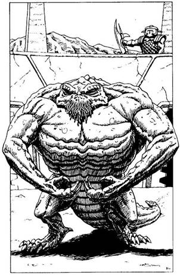
275.
Az őr kinyitja előtted az arénába vezető ajtót, és kilépsz a forró homokra, mely elesett versenyzőtársaid vérétől piroslik. Hirtelen egy másik ajtó is kinyílik az arénát körülvevő falban, és a félelmetes Csonttörő lép ki rajta. Vastag bőre csak úgy ragyog a napfényben. Ronda, apró fején két keskeny metszésű vaksi szem és lapos orr van, szorosra zárt szája körül pedig bőrrojtok lógnak. Teste ezzel szemben hatalmas, és két lobogó karja félelmetesen erős. Ha pallossal meg pajzzsal akarsz ellene harcolni - lapozz az 56-ra. Ha a háromágú szigonnyal meg a hálóval akarsz megküzdeni vele - lapozz a 175-re.
276.
Rohansz, ahogy csak tudsz lefelé az alagúton, és megpróbálod átugrani a fekete lyukat. Nem jársz szerencsével, és lezuhansz a közel húszméteres mélységbe. Azonnal meghalsz. A láthatatlan szájaknak könnyű dolguk lesz összetört testeddel.

277.
Az ádáz csata után fáradtan lerogysz a fal mellé. A vaskesztyű varázsereje Liche Királynő halálával megszűnt, így végre le tudod húzni a kezedről, és elhajítod. De a fájdalmas kísérletnek ára van: vesztesz 1 ÜGYESSÉG pontot! Mikor végre elmúlik a remegés, odamész Liche Királynő holttestéhez, és ekkor az egyik csontos ujján egy aranygyűrűt pillantasz meg. Lehúzod, és elteszed a bőrerszényedbe. Lassan az ajtóhoz mész, és azon gondolkodsz, Vajon merre is indulj tovább. Ha jobbra akarsz menni - lapozz a 285-re. Ha balra akarsz menni a T elágazás felé - lapozz a 227-re.
278.
A Próbamester azt mondja, hogy helyezd a gyűrűket a padra. Lapozz a 367-re.

279.
A barlang kissé kiszélesedik, de még mindig elég szűk. Dohszag terjeng a levegőben, és a barlang végéből, egy sziklás kiugró mögül röfögés hallatszik. Hirtelen egy undorító külsejű lény jelenik meg előtted, akinek parányi, emberszabású testét szőr borítja. A feje akár a vaddisznóé, szájából két görbe agyar áll ki. Kezében kőbunkót tartva közelít feléd az Agyaras. Nem nevezhető igazán a szövetségesednek.
Agyaras ÜGYESSÉG 6 ÉLETERŐ 6
Ismét az életedért kell harcolnod. Ha te győzöl - lapozz a 339-re.
280.
A nyílvessző épphogy súrolja a válladat. Vesztesz 1 ÉLETERŐ pontot. Sérülésedet, amely nem több egy karcolásnál, gyorsan ellátod, és továbbmész az alagútban. Lapozz a 398-ra.
281.
Szerencsére az ajtó nincs bezárva, és be tudod csapni magad után. A páncélruha egyfolytában döngeti az ajtót, de mivel agya nincs, eszébe sem jut lenyomni a kilincset. Amikor megfordulsz, meglepődsz a másik szobában eléd táruló látványtól. Lapozz a 3-ra.

282.
Egy koszos rongyba csavart aranygyűrűt találsz a dobozban. A gyűrűt elteszed a bőrerszényedbe, és továbbmész az alagútban. Lapozz a 44-re.
283.
A tüskés buzogány fájdalmas csattanással beleáll a koponyádba. Holtan terülsz el a homokban. A Halálaréna újabb áldozatot követelt!
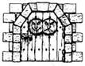
284.
Nyögve fölállsz, és mielőtt ismét felmennél a lépcsőkön, megmasszírozod fájdalomtól sajgó végtagjaidat. Újból megpróbálod átugrani a pirosra festett lépcsőfokokat, ezúttal sikerrel. Mire felérsz a lépcső tetejére, igencsak kifulladsz. Lapozz a 141-re.

285.
Előtted az alagútban, a fal mellett egy faládát pillantasz meg. Közelebbről megvizsgálod, de nem úgy látod, mintha csapda lenne. Ha ki akarod nyitni a ládát - lapozz a 194-re. Ha inkább továbbmész - lapozz a 47-re.

286.
Hirtelen selymes, finom fehér fonalak kígyóznak elő a trónszékből, és köréd tekerednek. Olyan erősen tartanak fogva, hogy mozdulni sem bírsz. Mintha egy óriási selyemgubó belsejének foglya lennél. Rémület fog el, mikor a varázsló elköszön tőled. Talán majd néhány év múlva más versenyzők megtalálják összeaszott földi maradványaidat.
287.
Hamarosan egy ajtóhoz érsz az alagútban, amely balról nyílik a falban. Megállsz, és hallgatózol, de semmit sem hallasz. Ha ki akarod nyitni az ajtót - lapozz a 156-ra. Ha inkább továbbmész - lapozz a 222-re.
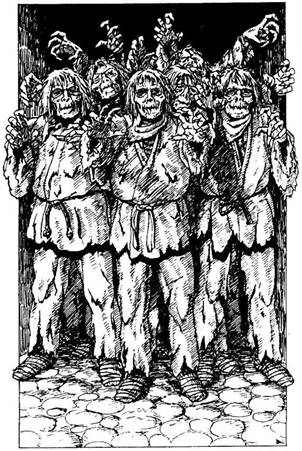
288.
Az alagút csakhamar egy vasajtónál ér véget. Az ajtó könnyen nyílik, majd becsapódik mögötted. Egy keresztalagútban találod magad, és amikor kitekintesz balra, elszörnyedsz az eléd táruló látványtól. Halálsápadt arcú Zombik nagy csoportja csoszog feléd. Tekintetük üres, szemük beesett. Testüket rongyok borítják, fakó, sebes bőrük foszladzik. Az ajtónak ezen az oldalán nincs kilincs, Viszont a Zombik túl sokan vannak ahhoz, hogy megbirkózz velük. Nincs más választásod, jobbra kell menekülnöd. Amint a Zombik elől rohansz az alagútban, hamarosan egy verem széléhez érsz, amely túl szélesnek látszik ahhoz, hogy átugorhasd. A Zombik a sarkadban vannak, és már tudod, hogy csapdába kerültél. Ha harcolni akarsz a Zombik ellen - lapozz a 185-re. Ha megpróbálod átugrani a vermet - lapozz a 347-re.
289.
Miközben lefelé mész, nem veszed észre a folyosó végén a falból kiálló mérgezett végű hegyes karókat. Széttárt karjaidat átszúrja a karók éles hegye. A méreg gyorsan hat, és rettenetesen betegnek érzed magad. Ha van nálad ellenmérget tartalmazó fiola - lapozz a 87- re. Ha nincs - lapozz a 231-re.
290.
Kitűnően céloztál: dárdád mélyen belefúródik az Óriás Százlábú alhasába. Vonaglani kezd a földön, majd hátára bukik, s apró lábaival tehetetlenül kapálódzik a levegőben. Kihasználva a kedvező alkalmat, sértetlenül elfutsz mellette. Lapozz a 391-re.
291.
Körülbelül húsz métert teszel meg az alagútban, amikor rálépsz egy meglazult kőre. A kő megbillen, és mozgásba hozza a mennyezet egy részét, amely rád zuhan. Nem menekülhetsz a rád zúduló törmeléktől.
292.
Lehajolsz, elkapod az őrt a lábainál fogva, és lerántod a földre. A leveses tányérok zörögve szerteszét gurulnak, miközben az őrrel birkózol. Mielőtt még cellatársaid követhetnék a példádat, egy másik őr odarohan a cellátokhoz, és bezárja az ajtót. Már látod, hogy erőfeszítésed hiábavaló. Elengeded az őrt, és várod a büntetésedet. Az őr elvezet és megkorbácsol. Vesztesz 4 ÉLETERŐ és 1 ÜGYESSÉG pontot! Félig eszméletlenül visszahurcolnak, és belöknek a celládba. Cellatársaid mindent megtesznek, hogy ellássák a sebeidet, mielőtt elvezetnének benneteket, hogy megkezdjétek első napotokat a Halálarénában. Lapozz a 22-re.
293.
Miközben megpróbálsz kiszabadulni, erőd egyre fogy. A pók ismét beléd mar, és újabb hálót von köréd, mielőtt nekilátna a lakomának.

294.
A kutya nyaki ütőerei kidagadnak, amikor a póráz megfeszül rajta. Lassan megközelíted, miközben óvod szabadon lévő testrészeidet.
Kétfejű Kutya ÜGYESSÉG 6 ÉLETERŐ 5
A kutya minden egyes fordulóban kétszer támad. Ahhoz azonban, hogy a fordulót megnyerd, a te Támadóerődnek nagyobbnak kell lennie mindkét fej Támadóerejénél. Ha te győzöl - lapozz a 217-re.
295.
Két tőrt bedugsz az öved mögé, és nekiállsz átkutatni a szobát. A szobában két faágy, egy ormótlan faláda, egy durván ácsolt asztal és négy szék van. Ha ki akarod nyitni a ládát - lapozz a 34-re. Ha inkább távozol a szobából és továbbmész az alagútban - lapozz a 133-ra.
296.
A megvadult balta csak egy hajszálnyira zúg el a lábad mellett, és ismét beleáll a fatönkbe. Elengeded a nyelét, és gyorsan döntesz, mit is tegyél. Ha el akarod vágni a kötelet a kardoddal - lapozz a 149-re. Ha inkább továbbmész - lapozz a 388-ra.
297.
Teszel egy lépést balra, s közben fülelsz, nem hallasz-e mozgást. Nem messze előtted hirtelen egy halálsikoly kíséretében egy test tompa puffanását hallod. Ha ismét balra teszel egy lépést - lapozz a 368-ra. Ha inkább lábadat megvetve meglendíted láncos buzogányodat - lapozz a 131-re.
298.
Gyors ellentámadásod váratlanul éri a Próbamestert. A bambuszrúddal eltalálod a nyakát, és ekkor győzedelmesen felkiáltasz. Bár semmi esélyed nem volt, mégis legyőzted a gyakorlott Próbamestert. Lapozz a 362-re.
299.
A gyűrűt beleteszed a bálvány kinyújtott tenyerébe, és szabadon továbbmehetsz. Lapozz a 23-ra.
300.
A szobában semmi más érdekeset nem találsz. Bár éhes vagy, mégis lemondasz róla, hogy a tálban gőzölgő levessel enyhíts éhségeden. Ha ki akarod nyitni a faládát - lapozz a 124-re. Ha inkább elhagyod a szobát, és továbbmész a folyosón - lapozz a 346-ra.
301.
Bal lábad beleakad egy huzalcsapdába, amely működésbe hoz egy nyilat a falban lévő lyukban. Dobj egy kockával! Ha 1-3-at dobsz - lapozz a 83-ra. Ha 4-et vagy 5-öt dobsz - lapozz a 30-ra. Ha 6-ot dobsz - lapozz a 280-ra.
302.
- Tudatlanságodért az életeddel fizetsz! - szólal meg a csontváz. Villám csap ki az ujjából, és egyenesen a melledbe fúródik. Azonnal meghalsz.

303.
Miközben arra vársz, hogy újabb undorító teremtmény jelenjen meg, megkönnyebbülsz, amikor azt látod, hogy a Tűzdémon önmaga tüze martalékává válik és porrá ég. Odamész az ajtóhoz, de zárva van, sőt be is reteszelték. Hirtelen hangosan ketyegni kezd az óra, és a szoba két szemközti üres fala idegesítő csikorgások közepette kezd összezáródni. Mit teszel?
Kiáltasz a varázslónak? Lapozz a 220-ra.
Felteszed az órára (ha nálad vannak)
a sárgaréz mutatókat? Lapozz a 81-re.
Meghúzol egy fogantyút? Lapozz a 48-ra.


304.
A távolból vízcsobogást hallasz, és az alagút csakhamar egy verem szélénél véget ér. Egy függőhíd ível át a vermen, amelynek túlsó végéből alagút nyílik. A híd- hoz egy faládát erősítettek; a fölötte lévő fatáblán ez olvasható: "Arannyal fizess, ha át akarsz menni." A hídról kötél lóg a mélybe. Amikor letekintesz a verem sötét mélyébe, egy sebes folyót látsz, semmi mást. Mit teszel?
Bedobsz egy aranytárgyat a ládába,
és átmész a hídon? Lapozz a 27-re.
Fizetés nélkül mész át a
hídon? Lapozz a 152-re.
Lemászol a kötélen a
verembe? Lapozz a 355-re.

305.
Amilyen csöndben csak lehet, felmész a lépcsőkön, majd egy pihenőhöz érsz. Innen újabb alagút indul, mely csakhamar egy öreg tölgyfa ajtónál ér véget. Az ajtóra rovásírással különböző jeleket festettek, de fogalmad sincs róla, mit jelenthetnek. Az ajtó egyik oldalában egy ugyancsak tölgyből készült láda áll. Ha ki akarod nyitni az ajtót - lapozz a 43-ra. Ha előbb inkább felnyitod a láda tetejét - lapozz a 373-ra.
306.
Amint belépsz a szájba, az undorító nyelv megpróbál köréd tekeredni. Te azonban kardoddal készen állsz, hogy megküzdj vele.
Nyelv ÜGYESSÉG 5 ÉLETERŐ 6
Ha legyőzöd - lapozz a 85-re.
307.
A Hidegkarom barlangja hatalmas. Csontok hevernek szanaszét a földön, és ez azt mutatja, hogy a vadállat soha nem éhezett. Amint felnézel, fényt látsz kiszüremleni a mennyezetben lévő lyukon. Azt viszont nem tudod, hogyan lehet feljutni a lyukhoz. Valószínűleg Fang ellenségeit egyszerűen csak behajították ebbe a verembe, s rábízták őket Hidegkarom gondviselésére. A földön szakadt rongydarabokat és ruhafoszlányokat látsz, meg néhány pár csizmát. Az egyik pár elég jó állapotban van, és mintha a te méreted lenne. Mit teszel?
Felpróbálod a csizmát? Lapozz a 233-ra.
Keresel valami mást? Lapozz a 272-re.
Visszamész az alagútba? Lapozz a 150-re.

308.
Megpróbálod kivédeni a rudat, de túl lassú vagy. A Próbamester győztesen kiált fel, te pedig már tudod, hogy mindennek vége. Lapozz a 72-re.

309.
Egy marék diót és bogyót szórsz bele a zsákba, amely eltűnik a rács mögött. A kis ember mosolyogva így szól: - A púpos hazudik - majd eltűnik, és ismét magadra maradsz. Miközben azon töröd a fejed, ki is lehet az a púpos, ismét útnak indulsz. Lapozz az 58-ra.
310.
Amint gyorsabb iramra váltasz, az ogre megpróbál elgáncsolni. Tedd próbára a SZERENCSÉDET! Ha SZERENCSÉD van - lapozz a 78-ra. Ha nincs SZERENCSÉD - lapozz a 225-re.
311.
Amint hozzáérsz a lámpához, a bálvány életre kel. Lelép a márványtalapzatról, és kardját meglengetve elindul feléd.
Bálvány ÜGYESSÉG 9 ÉLETERŐ 6
Ha van varázskardod, legyőzheted a bálványt. Ha legyőzöd - lapozz a 262-re. Ha csak közönséges kardod van - lapozz az 55-re.
312.
Szellemi képességeid cserbenhagynak, és képtelen vagy megfejteni a rovásírást. Semmit nem tudsz kisilabizálni belőle. Úgy döntesz, nem vesztegeted itt az idődet, és inkább kinyitod az ajtót - lapozz a 221-re.
313.
Rálépsz a kőlapra, s ekkor működésbe lép az íjpuska. A nyílvessző végigszáguld a keskeny alagúton, de elzúg a füled mellett. Nyersz 1 SZERENCSE pontot! Befordulsz a kanyarnál, és körülbelül Száz méter megtétele után egy ajtóhoz érsz, amely a jobb oldali falból nyílik. Ha ki akarod nyitni az ajtót - lapozz a 104-re. Ha inkább továbbmész - lapozz a 20-ra.
314.
A festmény teljesen hétköznapi, és a keretben sincs elrejtve semmi. A hátán viszont egy címkén fekete tintával a következő áll: "Harmadik sorozat, 176." Visszaakasztod a képet a falra, és továbbmész. Lapozz a 228-ra.
315.
Gyorsan körbepillantasz az alagútban, és ekkor valamivel előbbre hirtelen mozgást észlelsz. Lapozz a 195-re.

316.
Amint elbuksz a homokban, valaki parancsoló hangon ezt kiáltja: - Lődd le a gyávát! - Rémülten megpróbálsz ismét talpra állni, de láthatatlan íjászok két nyila a mellkasodba fúródik. Elterülsz a homokban, és többé nem mozdulsz.

317.
Amint a karodra húzod a karperecet, kezed elgyengül és remegni kezd. A karperecet megátkozták, de képtelen vagy lehúzni. Vesztesz 2 ÜGYESSÉG és 1 SZERENCSE pontot! Nincs más választásod, el kell hagynod a szobát, és tovább kell vonszolnod magad. Lapozz a 379-re.
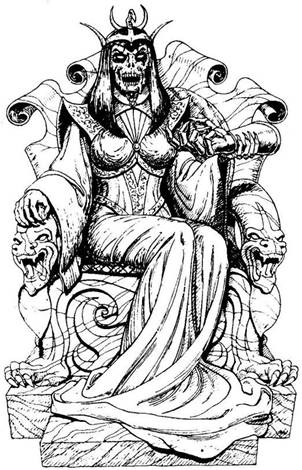
318.
A vasajtó kinyílik, és egy díszes szobában találod magad, amelynek a padlója márvány, s tele van szebbnél szebb bútorokkal. Szemed azonnal megakad egy gazdagon faragott trónuson, amelyen egy nő ül pompás köntösben. Azonban rémülten veszed észre, hogy a nő arca olyan, akár a halálé, csupa csont koponyájáról bőrcafatok lógnak alá. Vérvörös szemét rád veti, és ekkor Liche Királynő megszólal: - Ki az a bolond halandó, aki nem átall belépni a birodalmamba? Elég bátor vagy-e ahhoz, hogy felhúzd a fájdalom kesztyűjét, vagy inkább ott akarsz meghalni, ahol állsz? - Ha vállalod, hogy felhúzod a kesztyűt - lapozz a 212-re. Ha inkább megtámadod Liche Királynőt - lapozz a 363-ra.
319.
Körülbelül harminc métert mész tovább egyenesen, amikor egy faajtóhoz érsz, amely lezárja az alagutat. Ha ki akarod nyitni az ajtót - lapozz a 98-ra. Ha inkább visszamész a T elágazáshoz - lapozz a 232-re.
320.
A Próbamester előre sejti lépésedet, és egy oldalütéssel kivédi rudad csapását. Rúdjaitok egymáshoz csattannak, és máris elvesztetted az előnyödet. A Próbamester Új erőre kapva felugrik a magasba, és úgy próbál meg lecsapni rád. Elkeseredett igyekezetedben, hogy rávágj, mielőtt rád ugorna, felemeled a botodat. Dobj két kockával! Ha a kapott összeg Ugyanannyi vagy kevesebb, mint ÜGYESSÉG pontjaid száma - lapozz a 140-re. Ha a kapott összeg nagyobb, mint ÜGYESSÉG pontjaid száma - lapozz a 274-re.
321.
A mellvért remekül illik rád - kitűnő fegyver. Nyersz 1 ÜGYESSÉG pontot! Miután semmi más használható tárgyat nem találsz a szobában, kimész, és továbbindulsz az alagútban. Lapozz a 133-ra.
322.
Szerencsétlenségedre veszett volt a patkány, amely megharapott. Nemsokára habzani kezd a szád, és iszonyú fájdalom kerít hatalmába. Keserves kínhalál vár rád.
323.
A káoszbajnok kikapja előrenyújtott kezedből az aranyat, majd fejbe csap tüskés buzogányával. Ha a fejeden sisak van - lapozz a 350-re. Ha nincs sisak a fejeden - lapozz a 62-re.
324.
Amikor elkapod a megfelelő ritmust, agyad egyszer csak megbénul, és ahelyett, hogy lebuknál, megállsz. A hosszú, éles penge átvágja a torkodat, és élettelenül zuhansz a földre. Személyedben egy újabb versenyző esett ki.
325.
Megdöbbent a gyorsaság, ahogy a Vérféreg feje előretör. Kampóival sikerül beleakaszkodnia a combodba, és a véredet szívja. Vesztesz 2 ÉLETERŐ pontot!
Vérféreg ÜGYESSÉG 4 ÉLETERŐ 6
Megpróbálsz lecsapni a gonosz teremtményre. Vérveszteséged miatt minden egyes fordulóban automatikusan 2 ÉLETERŐ pontot vesztesz, tekintet nélkül arra, megnyered-e a fordulót vagy sem. Ha te győzöl - lapozz a 123-ra.
326.
A Csontördög csontváz testét egy suhintással apró darabokra töröd. Halhatatlan lelke azonban koponyáján át kiszáll, és kirepül a mennyezet nyílásán át. Lehajolsz, és amikor megvizsgálod az összetört csontdarabokat, egy aranygyűrűt veszel észre a Csontördög egyik ujján. Lehúzod a hideg csontról, és bedobod az erszényedbe. A barlangból nincs más kijárat, így hát visszamész az alagútba, és folytatod az utadat. Lapozz a 150-re.

327.
Könnyedén átugrod a három lépcsőfokot, a többin pedig fölsétálsz. Lapozz a 141-re.
328.
Visszamászol a veremből, és eldöntöd, mit tegyél.
Bedobsz egy aranytárgyat a dobozba,
és átmész a hídon? Lapozz a 27-re.
Átmész a hídon fizetés nélkül? Lapozz a 152-re.
Visszamész az alagúton a
T elágazásig? Lapozz a 229-re.
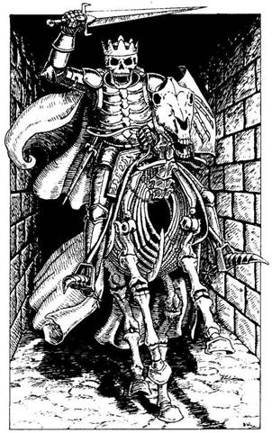
329.
Hamarosan patacsattogás hangja üti meg a füledet, s betölti az egész alagutat. A homályból egy alak körvonalai bontakoznak ki. Egy fehér Csontváz ló hátán egy páncélruhába öltözött Csontváz ül a nyeregben, fején koronával. Amikor a Csontváz Király észrevesz, vágtára ösztönzi élőholt lovát, és kardját a magasba emeli. Meg kell küzdened az élőholt lovassal.
Csontváz Király ÜGYESSÉG 9 ÉLETERŐ 7
Az olyan éles fegyverek, mint a kard vagy tőr, nem sok kárt tesznek a Csontvázakban. Ha nincs kalapácsod, amivel a Csontváz Királyt elpusztíthatnád, Csupán 1 ÉLETERŐ Pont veszteséget okozhatsz neki minden számodra sikeres fordulóban. Ha legyőzöd - lapozz a 209-re.
330.
Nincs menekvés számodra, és csak azon tűnődhetsz el, vajon mi történt volna veled, ha egy másik útvonalat választasz. A Halállabirintus újabb áldozatot követelt.
331.
Már szinte az eszméletvesztés szélén állsz, mire sikerül kihúznod a dugót. Kiiszod a fiola tartalmát. Remegésed azonnal megszűnik, az ital ugyanis azonnal közömbösítette a mérget. Amikor már elég erősnek érzed magad, hogy folytasd az utadat, visszamész a folyosón egészen addig, amíg egy veremhez nem érsz, amely előtted tátong. Lemászol, és egy alsó alagútba jutsz. Lapozz a 315-re.
332.
Kissé hátralépsz, majd teljes súlyoddal nekirontasz az ajtónak. Mikor az kivágódik, kardot rántasz, és belépsz az előtted tátongó sötétségbe. Lapozz a 219-re.
333.
A folyosó egy T elágazásban ér véget. Balra egy hatalmas kőrakás zárja el az utat, jobbra úgy húsz méterre tőled egy faajtó van. Ha meg akarod nézni a kőrakást - lapozz a 96-ra. Ha az ajtó felé indulsz el - lapozz a 375- re.
334.
Túl lassan szeded föl a hálódat, és a Csonttörőnek közben sikerül elkapnia az egyik karodat. Úgy roppantja szét, akár egy kis faágat. Karodat el sem ereszti, és máris a nyakadat kapja el, majd ugyanolyan könnyedén azt is szétroppantja. Sajnos egy újabb versenyző bukott el...
335.
Lehetetlen elbújnod a rád hulló savas zuhatag elől. Dobj egy kockával, hogy megállapíthasd, hány csepp ér, miközben átrohansz az alagútnak ezen a szakaszán. Mindegyikért vonj le magadtól 1 ÉLETERŐ pontot. Végre megpillantod a napvilágot az alagút végében, és rohanva indulsz el felé. Lapozz a 188-ra.
336.
Recsegve szakadnak ki az odaszögezett deszkák, amikor lefeszíted őket. Tedd próbára a SZERENCSÉDET! Ha SZERENCSÉD van - lapozz a 122-re. Ha nincs SZERENCSÉD - lapozz a 76-ra.
337.
Köveket, törmeléket sodor magával a forgószél. Megkapaszkodsz a sziklafalban, de a szél ereje továbbsodor. Egy repülő szikladarab épp fejen talál, és elzuhansz. Vesztesz 2 ÉLETERŐ pontot! Amikor magadhoz térsz, már ismét minden nyugodt körülötted. Összeszeded magad, és ismét útnak indulsz. Lapozz a 195- re.

338.
Nem vagy elég ügyes, és belezuhansz a folyóba. Az ár magával sodor a föld alá. Kalandod a hullámsírban ér véget.

339.
Az Agyaras barlangjában nincs sok holmi, s azok közül is csupán egy otromba piros agyagmalac vonja magára a figyelmedet. A malac belseje üreges, s amikor megrázod, hallod, hogy valami zörög benne. Ha össze akarod törni a malacot, hogy megnézd, mi van benne - lapozz a 75-re. Ha inkább elhagyod a barlangot - lapozz a 167-re.
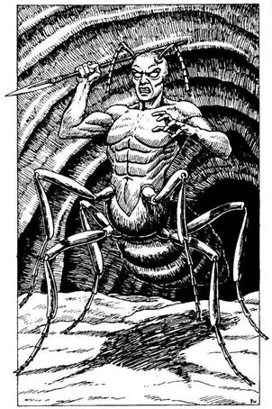
340.
Bemászol a lyukon, és egy sötét kis kamrában találod magad. A hang, amit hallottál, a kamrarendszerben lakó különös teremtményektől származott. A fejtől derékig embert, deréktól lefelé Viszont óriáshangyát idéző Xoroák nagy föld alatti kolóniákban élnek. Megzavartál egy Xoroa Harcost, aki éles ezüstszemével és kifinomult hallásával azonnal megállapítja, hol állsz. Kezében rövid dárdával elindul feléd a sötétből, hogy rád támadjon.
Xoroa Harcos ÜGYESSÉG 10 ÉLETERŐ 11
E harc időtartamára vonj le 1-et ÜGYESSÉG pontjaidból, mivel a sötétség miatt hátrányos helyzetben vagy. Ha te győzöl - lapozz a 170-re.
341.
Sebtében végigkutatod az Ork őr zsebeit, és találsz is néhány üveggolyót. Ezeket beleteszed az öveden lógó erszénybe, és folytatod a deszkák lefeszítését. Végül, mikor az utolsót is sikerül eltávolítanod, kinyitod az ajtót. Lapozz a 13-ra.
342.
A túlsúly ellenére is sikerül átugranod a három lépcsőfokot, és biztonságosan landolsz a következőn. Mire felérsz a lépcsősor tetejére, alaposan kifulladsz. Lapozz a 141-re.
343.
A Csonttörőnek sikerül elkapnia kardforgató kezedet, és kettétöri, akár egy kis faágat. Karodat el sem eresztve a másik kezével most a nyakadat kapja el, és ugyanolyan könnyedén azt is szétroppantja. Ismét távozott egy versenyző az arénából.
344.
Helyén van az eszed, s ennek köszönhetően gyorsan megfejted az egyik rúnát. "Ne higgy a baltának!" - szól az írás. Megjegyzed az intelmet, és kinyitod az ajtót. Lapozz a 221-re.

345.
A Próbamester azt mondja, hogy helyezd a gyűrűket a pad tetejére. Ha kilenc gyűrűd van - lapozz a 35-re. Ha tizenegy gyűrűd van - lapozz a 392-re.
346.
Egy újabb ajtóhoz érsz, amely jobbról nyílik a falban. Az ajtóhoz egy kis madár van odaszögezve régóta halott, teste teljesen összeaszott. Ha ki akarod nyitni az ajtót - lapozz az 59-re. Ha inkább továbbmész az alagútban - lapozz a 150-re.
347.
A verem felé rohansz, amilyen gyorsan csak tudsz, és megpróbálsz átugrani a fekete űr fölött. Ha a fejeden van a szárnyas sisak - lapozz a 114-re. Ha nincs - lapozz a 226-ra.

348.
Kardoddal kiszabadítod a parányi emberkét a pók hálójából, és hátrébb húzódva óvatosan megállsz, hátha túl akar járni az eszeden. De ő meghajol, és egyszerűen így szól: - Köszönöm neked, idegen! Én Billybob vagyok a Kis Emberek közül, és örök életemre hálás leszek neked. Népünk több nemzedék óta itt él e hegy alatt, de most a félelmetes szörnyek miatt, akik átvették a hatalmat a mi alagútjainkban, földönfutókká lettünk. Minél előbb végeznek velük a hozzád hasonlók, annál jobb. Cserébe, amiért megmentetted az életemet, fogadd el tőlem azt, amit a skorpió fészkében találtam. - Billybob egy aranygyűrűt ejt a tenyeredbe. - Azonban mielőtt elbúcsúzom, fogadj el egy jó tanácsot: sose igyál a szökőkút vizéből! Most mennem kell, már így is nagyon elkéstem. Viszontlátásra. - Ezzel a kis ember kiszalad a barlangból, és eltűnik a bal oldali alagútban. Lapozz a 397-re.
349.
Amikor hátralépsz, megbotlasz egy homokban fekvő testben. Ellenfeled meghallja, hogy elestél, és támad, hogy megöljön. De ő is felbukik a testben, és rád esik. Súlyos teste csatakos az izzadságtól. Birokra kelsz vele a homokban: belevágsz a pajzsoddal, s közben megpróbálod kiszabadítani a másik kezedet, hogy meglendíthesd láncos buzogányodat.
Rabszolga ÜGYESSÉG 9 ÉLETERŐ 8
Ha legyőzöd - lapozz a 196-ra.

350.
Egy iszonytató ütés a földre terít, és elsötétül a világ a szemed előtt. Vesztesz 1 ÜGYESSÉG és 4 ÉLETERŐ pontot! A káoszbajnok, aki halottnak hisz, elindul lefelé az alagútban. Idő kell hozzá, hogy ismét kitisztuljon előtted a világ, de tudod, hogy a küzdelmet nem adhatod fel. Föltápászkodsz, és elindulsz fölfelé az alagútban. Lapozz a 44-re.

351.
Körülbelül húsz métert teszel meg, amikor egy vas- rácshoz érsz, amely a lábad előtt van a földben. Ha fel akarod emelni a rácsot - lapozz a 74-re. Ha inkább továbbmész - lapozz a 174-re.
352.
Sokkal erősebb vagy, mint a barlangi ember. Teljes erővel megrántod a kötelet, s ellenfeled fejjel belezuhan a verembe. A Próbamester, akit egyáltalán nem rendít meg szolgájának halála, ismét megszólal: - Most felteszek neked egy találós kérdést. Gondolkodj, mielőtt válaszolnál. - Rámutat a szoba közepén álló faládára, és azt mondja: - Ebben a ládában hat kisebb láda van, és mindegyikben három még kisebb láda. Hány láda van összesen? - Ha tudod a választ, lapozz arra a pontra, amit a ládák száma megad. Ha tévedsz, vagy nem tudod a választ - lapozz a 72-re.
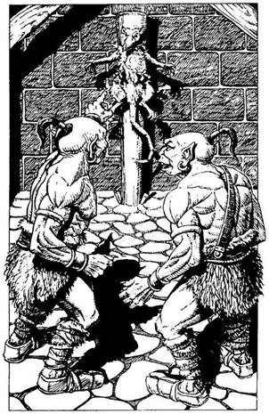
353.
Rátörsz a két Orkra, akik egy oszlophoz szögezett nagyméretű patkányt választva célpontul, éppen tőrdobó versenyt tartanak. Tedd próbára a SZERENCSÉDET! Ha SZERENCSÉD van-lapozza 139-re. Ha nincs SZERENCSÉD - lapozz a 192-re.
354.
A hadúr az előző csatában épphogy megmentette az irháját, erre utalnak testén a mély karomnyomok. Egyetlen vagyona egy kard. Úgy döntesz, hogy otthagyod, és elindulsz lefelé az alagútban, de beleütközöl egy láthatatlan, szilárd akadályba. Ismét csapdába kerültél, és úgy látod, nincs menekvés. Ha van nálad egy piros port tartalmazó fiola - lapozz a 238-ra. Ha nincs - lapozz a 330-ra.
355.
Lábaddal kitapogatsz egy kis párkányt, amely a folyó fölött vezet el. Elereszted a kötelet, és elindulsz a párkányon, amely egy koromsötét barlangnyíláshoz visz. Hirtelen két csontos kéz nyúl ki a sötétből, megpróbál lelökni a folyóba. Dobj két kockával! Ha a kapott összeg ugyanannyi vagy kevesebb, mint ÜGYESSÉG pontjaid száma - lapozz a 100-ra. Ha a kapott összeg nagyobb, mint ÜGYESSÉG pontjaid száma - lapozz a 338-ra.
356.
Képtelen vagy megszabadulni tőle, és lehúz a víz alá. Itt már nem hallod a Szirén énekét, és ismét úrrá leszel az akaratodon. Gyors elhatározással harcolni kezdesz a sokkarú szörny ellen.
Tentallus ÜGYESSÉG 8 ÉLETERŐ 12
Hacsak nem nyersz meg minden fordulóból legalább egyet, megfulladsz. Ha te győzöl - lapozz a 236-ra.
357.
Kissé hátralépsz, majd teljes súlyoddal nekifeszülsz az ajtónak. Az beszakad, de nagyon megütöd a válladat. Vesztesz 1 ÜGYESSÉG pontot! Kardot rántasz, és belépsz az előtted tátongó sötétségbe. Lapozz a 219-re.

358.
- Alaposan átkutathattad a labirintust. Sukumvit báró megesküdött, hogy erre senki nem lesz képes. Mindenesetre, kérem az utolsó hármat. - Ha tudod az utolsó számsort, lapozz arra a pontra. Ha nem tudod - lapozz a 286-ra.
359.
Csaknem derékig jársz már az iszapban, és hamarosan a nyakadig ér. A lábad alatt azonban lassan emelkedni kezd a talaj, s csakhamar túl jutsz a vulkanikus iszap- medencén. Az ásványi sókban gazdag iszapnak fantasztikus gyógyító ereje van. Nyersz 5 ÉLETERŐ és 1 ÜGYESSÉG pontot! A folyosó egy teremnél ér véget, amelyet izzó sziklák világítanak meg. A folyosó átvezet a termen, és a túloldali fekete falban folytatódik. A szoba közepén csaknem egy méter magas, zsírkőből faragott elefántfigura áll. A hasa alatt, egy hajszálrepedés mentén, titkos rekeszt fedezel fel, de nem tudod, miként nyissad ki. Ekkor egy másik hajszálrepedést veszel észre az elefánt ormánya mellett, és arra a következtetésre jutsz, hogy ha meghúzod az elefánt ormányát, a titkos rekesz kinyílik. Ha meghúzod az elefánt ormányát - lapozz a 60-ra. Ha inkább továbbmész a folyosón - lapozz a 263-ra.

360.
Az északi ember egyre növeli az előnyét veletek szemben, de te még mindig úgy érzed, van annyi erőd, hogy behozd a lemaradást. Mikor már csak tíz méterre van előttetek, mindannyian rákapcsoltok. Csak ketten futnak előtted, de nem nézel hátra. Hirtelen fájdalmas ordítást hallasz, melyet a versenyt lefújó kiáltás követ. A törpe elnyúlva fekszik a homokban; akkor esett össze, amikor az északi ember utolérte. Miközben vissza- vezetnek benneteket a celláitokba, a törpével gyorsan végeznek, még mielőtt a következő verseny elkezdődne. Lapozz a 136-ra.

361.
Az alagút még legalább harminc méteren át egyenes, majd balra kanyarodik. Amikor odaérsz a kanyarhoz, nem veszed észre a falak között kihúzott vékony drótcsapdát. Tedd próbára a SZERENCSÉDET! Ha SZERENCSÉD van - lapozz a 164-re. Ha nincs SZERENCSÉD - lapozz a 301-re.

362.
A Próbamester lihegve hátrál, és elfúló hangon így szól: - A harmadik próbán is túljutottál! Most folytathatod az utadat a labirintusban. A hátam mögött lévő ajtón menj ki a szobából. - Mivel az öregember egy szóval sem mond többet, nem ad tanácsot, nem is bátorít, elhagyod a szobát. Kinyitod az ajtót, átmész a barlangi ember mocskos "hálószobáján", és egy másik hosszú, Sötét alagútba jutsz. Nemsokára egy hal formájú kő szökőkúthoz érsz. Ha inni akarsz a szökőkút vizéből - lapozz a 95-re. Ha inkább továbbmész - lapozz a 329-re.

363.
Amikor kardot rántva közelítesz felé, Liche Királynő megnyom a trónusán egy láthatatlan lemezt, erre a padló hirtelen megnyílik a lábad alatt, és vagy öt métert zuhansz a mélybe. Tedd próbára a SZERENCSÉDET! Ha SZERENCSÉD van - lapozz a 216-ra. Ha nincs SZERENCSÉD - lapozz az 54-re.
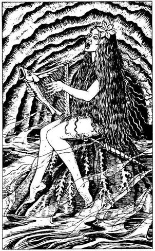
364.
A lépcsők egy barlangba vezetnek, amelyben enyhén bugyborékoló víz hömpölyög. Pára gomolyog a hideg levegőben, s azon át látod a barlang végében a kivezető alagutat. A föld alatti tó közepén emelkedő sziklaorom tetején egy gyönyörű nő ül, és csábos hangon énekel. Ez egy Szirén, az ember formájú gonosz csábítók egyike. Énekével magához csalogat, hogy hosszú késével végezzen veled, és feláldozzon isteneinek. Dobj egy kockával! Ha 1-et vagy 2-t dobsz - lapozz a 103-ra. Ha 3-6-ig dobsz - lapozz a 203-ra.

365.
A méreg átjárja a testedet, és már szinte eszméletedet veszted amikor megmarkolod a kezedbe kerülő első fiolát. Dobj egy kockával. Ha 1-3-ig dobsz - lapozz a 151-re. Ha 4-6-ig dobsz - lapozz a 260-ra.
366.
Belakmározol a finom zöldségekből és rizsből. Majd szétpukkadsz, annyit ettél. Nyersz 4 ÉLETERŐ pontot! Kézfejeddel megtörlöd a szádat, és továbbindulsz az alagútban. Lapozz a 47-re.
367.
Erszényedet a padra üríted, és megszámolod az aranygyűrűidet. Az öreg varázsló haragosan így szól: - Attól tartok, nincs meg az összes. A vesztessel egyféleképpen lehet elbánni, úgy, ahogy azt Sukumvit báró elrendelte. - Mielőtt még kardot ránthatnál, villám csap ki a varázsló előrenyújtott ujjából, és a melledbe fúródik, Oly közel voltál már a győzelemhez, s az utolsó próbán most mégis megbuktál.
368.
Lépsz egyet, majd megállsz hallgatózni. Nem hallasz semmit, ezért úgy döntesz, hogy az ellenkező irányba mész. Tedd próbára a SZERENCSÉDET! Ha SZERENCSÉD van - lapozz a 166-ra. Ha nincs SZERENCSÉD - lapozz a 73-ra.
369.
- Az utasítás úgy szól, hogy háromféle próbának kell megfelelned. Erő-, intelligencia- és harckészségpróbának vetlek alá. Ha egyetlenegy is akad, amelynek nem felelsz meg, nem folytathatod a Bajnokok próbáját. Az győz, aki a legjobb közületek. Az első próba: kötélhúzás egy barlangi emberrel. - Ekkor kinyílik az ajtó a Próbamester mögött, és egy hosszú hajú, szakadt állatbőrökbe öltözött hatalmas férfi lép a szobába. A Próbamester megkoppintja a botjával maga előtt a padlót, erre az szétnyílik, és feltűnik egy sötét verem. Ekkor azt parancsolja a barlangi embernek, hogy a szekrényből vegyen elő egy vastag kötelet. A kötelet átveti a verem fölött, és az egyik végét a te kezedbe adja. A kötél másik végét a barlangi ember markolja meg. Háromig számol, majd így kiált: - Húúzd meg! - A barlangi ember iszonyú erős, és összeszorított foggal, teljes erővel húzod magad felé a kötelet. A barlangi ember ÜGYESSÉGE 7. A kötélhúzást a szokásos csata szabályai szerint kell számolni, csupán ÉLETERŐ pontjaidat nem kell csökkentened, mivel a verseny nem jár sérüléssel. Jegyezd a Kalandlapon, ki nyeri az egyes fordulókat. Ha te nyered meg elsőnek a négy fordulót - lapozz a 352-re. Ha a barlangi ember az, aki a négy fordulót elsőnek megnyeri - lapozz a 99-re.
370.
Lehajtod a fejedet, és amilyen gyorsan csak tudsz, átrohansz a boltív alatt. Ha bíborpalást van rajtad - lapozz a 16-ra. Ha nincs rajtad a bíborpalást - lapozz a 101-re.
371.
- Bölcs versenyző vagy - szólal meg nyugodt hangon a csontváz. - Jutalmad, amiért túljutottál a próbának ezen a szakaszán, ott van az asztalfiókban. - A csontváz szája nyitva marad, de több hang nem jön belőle. Körülnézel a sötét szobában, és csakhamar megpillantod a kis fiókos asztalkát. Óvatosan kihúzod a fiókot, és egy kis vaskulcsot találsz benne. A kulcsot elteszed az öveden lévő erszényedbe, és kimész a szobából, majd tovább folytatod az utadat az alagútban. Lapozz a 45-re.
372.
Minden egyes piros lépcsőfok gyógyító vibrálást fejt ki. Nyersz 3 ÉLETERŐ pontot! Újult erővel szaladsz fel a lépcsősor tetejére. Lapozz a 141-re.
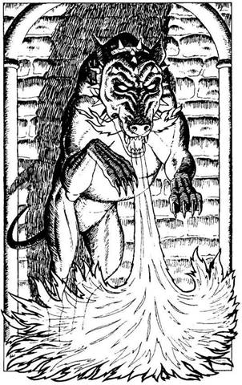
373.
A dobozban egy összetekert kötelet találsz. Arra gondolsz, hogy talán később majd még hasznát veheted, ezért a válladra akasztod. Találsz egy kalapácsot is, amit az övedbe dugsz, meg egy színtelen folyadékkal teli kis fiolát, amelyen "Ellenméreg" felirat áll. Örülsz új szerzeményeidnek, és kinyitod az ajtót. Lapozz a 43-ra.
374.
Az ajtó könnyen nyílik, és egy kis szobába lépsz. Mielőtt még időd lenne körülnézni, hatalmas, fekete Pokolkutya veti rád magát, és a szájából lángnyelvek csapnak ki. Meg kell ölnöd a dühöngő vadállatot.
Pokolkutya ÜGYESSÉG 7 ÉLETERŐ 6
Minden egyes forduló után dobj egy kockával. Ha 1-et vagy 2-t dobsz, vonj le magadtól további 1 ÉLETERŐ pontot, mert a Pokolkutya szájából kicsapó lángok megsebesítenek. Ha te győzöl - lapozz az 52-re.
375.
Az ajtó túloldaláról egy férfi kétségbeesett segélykiáltásait hallod. Ha ki akarod nyitni az ajtót - lapozz a 168-ra. Ha inkább továbbmész - lapozz a 138-ra.
376.
A szoba padlója hirtelen megremeg, majd süllyedni kezd. Lassan forogva leereszt egy másik szobába. Leugrasz annak a padlójára, és ekkor az előző szoba padlója emelkedni kezd, majd összezáródik fölötted. A szobában márványtalapzaton egzotikus gyümölcsök vannak egy nagy tálban. Ha eszel a gyümölcsből - lapozz a 97-re. Ha inkább kinyitod a szoba egyetlen ajtaját - lapozz a 163-ra.
377.
Amikor lenyomod a kart, az óraszekrény ajtaja kinyílik, és egy titkos átjárót pillantasz meg mögötte. Épp hogy átpréseled magad a nyíláson, amikor recsegő zajt hallasz, és az óraszekrényt ripityára törik az összezáruló falak. Elindulsz a kanyargós folyosón, majd egy T elágazáshoz érsz, amelyik a főalagúthoz csatlakozik. Ha balra akarsz továbbmenni - lapozz a 232-re. Ha jobbra akarsz továbbmenni - lapozz 319-re.
378.
Jobbra kanyarodva mész tovább az alagútban, s egy faajtóhoz érsz. Nincs más választásod, ki kell nyitnod az ajtót. Igencsak meglep, amit a szobában látsz. Lapozz a 3-ra.
379.
Egy ideig egyenesen mész az alagútban, majd egy T elágazáshoz érsz. Ha balra akarsz fordulni - lapozz a 162-re. Ha jobbra mész - lapozz a 251-re.
380.
Kardforgató karod súlyosan megsérült. Vesztesz 1 ÜGYESSÉG és 2 ÉLETERŐ pontot! Ha Ott maradsz, ahol állsz, és ismét meglendíted láncos buzogányodat - lapozz a 159-re. Ha jobbra lépsz - lapozz a 120-ra.
381.
A Troll olyan elmélyülten veri a falat, hogy sikerül észrevétlenül elsurrannod mellette. Szorosan a fal mellett haladva nyugodtan továbbmész az alagúton fölfelé. Lapozz a 211-re.
382.
Az íjpuska nyílvesszője a melledbe fúródik, és átdöfi a szívedet. Holtan zuhansz a földre.
383.
Tőröd behatol ellenfeled páncélruhájának egyik kis résén, és belefúródik a bajnok vállába. A megvadult káoszbajnok élő harci gép, akit születésétől fogva gyilkolásra neveltek, és most a harci vágytól eltelve mit sem törődik sebesülésével.
Káoszbajnok ÜGYESSÉG 11 ÉLETERŐ 10
Ha legyőzöd - lapozz a 180-ra.
384.
A Csontördög félelmetes látványa megbénít, és egy lépést se tudsz tenni, miközben az döngő léptekkel elindul feléd. Dobj három kockával! Ha a kapott összeg ugyanannyi vagy kevesebb, mint ÜGYESSÉG pontjaid száma - lapozz a 29-re. Ha a kapott összeg nagyobb, mint ÜGYESSÉG pontjaid száma - lapozz a 265-re.
385.
A Próbamester nem számít rá, hogy újabb ütést mérsz a fejére, és rúdját helytelenül túl alacsonyan
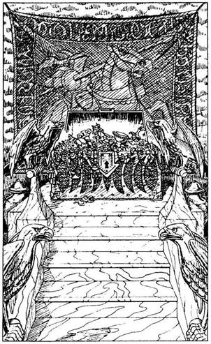
tartja. A bambuszrudaddal sikerül fejbe vágnod, és győztesen kiáltasz fel. Esélytelen helyzetből mégis te győztél a rituális versenyben. Lapozz a 362-re.
386.
Gazdagon bútorozott szobába nyitsz be. Fantasztikus tárgyak vesznek körül, de a szemed mégis egy magas emelvényen álló kincsesládán akad meg, mely a terem végében van. Színarany sasszobrok szegélyezik az emelvényre felvezető márványlépcső négy sarkát. A kincsesláda dugig van gyémánttal, arannyal és drágakővel. Fölmész a lépcsőkön, de abban a pillanatban, amikor a kincsek után nyúlnál, az aranytárgyak meg a drágakövek eltűnnek, és helyettük a félelmetes Agytorzító Szörny kitátott száját pillantod meg. Ez a kegyetlen gyilkos tökéletes illúzióteremtő képességgel rendelkezik, és most egy tűhegyes fogakkal szegélyezett hatalmas zöld száj alakjában jelent meg. Az állkapocs összecsattan; kis híján kettéharap. A következő harapás azonban már sikeresebb...
387.
Ellenfeled tüskés buzogánya célba talál - a fejedet éri. Eszméletlenül zuhansz a földre, és többé nem mozdulsz. Megpróbáltatásaid az arénában ezzel véget érnek.
388.
Amint mész, meglepődsz, amikor a fejed fölött cincogó hangon valaki így kiált: - Helló! - Felnézel, és látod, hogy a mennyezetben lévő rács mögül egy parányi arc tekint le rád. - Éhes vagyok! - mondja a kis ember. - Adj valamit ennem, és cserébe mondok egy-két dolgot arról, akivel találkoznod kell. - Ezzel kötélen leereszt egy gyapjúzsákot, abban a reményben, hogy kap valamit. Ha akarsz egy kevés diót és bogyót adni a kis embernek - lapozz a 309-re. Ha inkább továbbmész, anélkül hogy adnál neki értékes ételedből - lapozz az 58-ra.
389.
Szerencséd, hogy nem volt veszett a patkány, amely megharapott. Elrántod a lábadtól az aljas rágcsálót, és beledöfsz a kardoddal. Lapozz a 146-ra, és folytasd a harcot.
390.
Nekisimulsz az alagút falának, és szép lassan, óvatosan átlépsz a lándzsák alatt. Amikor végre túljutsz rajtuk, arra gondolsz, biztosan azért tették ide őket, hogy visszariadjon, aki erre jön. Felnyúlsz, és éppen csak eléred a lándzsa hegyét. Ha megpróbálod kihúzni a lándzsát a helyéből - lapozz a 110-re. Ha inkább továbbmész - lapozz az 5-re.
391.
Belesel a Százlábú sötét barlangjába. A falak nyirkosak, nyálkásak, és nem látsz messzire. Ha be akarsz menni a barlangba - lapozz a 89-re. Ha inkább továbbmész az alagútban - lapozz a 161-re.
392.
A Próbamester nem várja meg, hogy megszámold a gyűrűket. Barátságtalan hangon így szól: - Egyféleképpen lehet elbánni a hazugokkal. - Mielőtt még kardot ránthatnál, villám csap ki a varázsló előremutató ujjából, és a melledbe fúródik. Oly közel jártál már a sikerhez, s mégis oly távol kerültél tőle... megbuktál a végső próbán.
393.
Szerencsére a pajzsot tartó kezed sérült meg. Vesztesz 2 ÉLETERŐ pontot! Ha nem mozdulsz arról a helyről, ahol állsz, és meglengeted láncos buzogányodat - lapozz a 159-re. Ha balra lépsz - lapozz a 120-ra.
394.
A fáklya lángja félelmetes árnyakkal tölti meg az elhagyott alagutat, de téged csak az ajtó túloldalán lévő szavak és számok érdekelnek. Alig olvasható írással a következőt látod: "Első sorozat, 249." Jól bevésed az agyadba, amit olvastál, majd kimész az ajtón, és elindulsz a T elágazás másik végében lévő ajtó felé. Lapozz a 375-re.
395.
A gyümölcs kitűnő, nagyon ízlik. Nyersz 2 ÉLETERŐ pontot! Amikor már eleget ettél, visszatérsz az alagútba, és továbbmész rajta felfelé. Lapozz a 20-ra.
396.
Mint a ketrecbe zárt oroszlán, megpróbálsz kibújni a rácsok között, s egyre dühösebb leszel. Csapdába kerültél, és nincs menekvés.
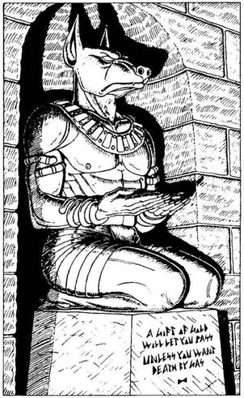
397.
Az alagút nemsokára egy kő lépcsősor aljánál ér véget. A korlátra erősített nyitott koponyákban gyertyák égnek, s megvilágítják az utat. A lépcsőn fölfelé is, lefelé is mehetsz. Ha fölfelé indulsz - lapozz a 305-re. Ha inkább lefelé - lapozz a 93-ra.
398.
A bal oldali falban, egy boltíves beugróban kutyafejű, embertestű istenség bronzszobrát látod. A bálvány fölfelé fordítja a tenyerét, s alatta a következő felirat olvasható: "Ha egy aranytárgyat adsz, továbbmehetsz, hacsak nem akarsz meghalni." Ha van nálad aranytárgy, és bele akarod tenni a bálvány tenyerébe - lapozz a 299-re. Ha inkább megpróbálsz elmenni mellette - lapozz a 193-ra.
399.
Szerencsédre megszűnik a lidércnyomás, amikor egy másik versenyző lép be a boszorkány szobájába, és kinyitja a faládát. Vakító fény villan, és úgy érzed, mintha tested megnyúlna. Egy üres kis szobában találod magad. Az egyik falban fogantyú van, amit le lehet húzni vagy fel lehet tolni. Ha feltolod a fogantyút - lapozz a 242-re. Ha a fogantyút lehúzod - lapozz a 376-ra.

400.
A tömeg vad éljenzése közepette átveszed a győztesnek járó jutalmat Sukumvit bárótól. Álmodni sem mertél volna ekkora pénzösszegről, amit most egyedül vihetsz el. A következő héten kipihened a megpróbáltatások fáradalmait, és ismét kezded jól érezni magad. Azon gondolkodol, vajon mire is költsd ezt a nagy halom pénzt. Ekkor vad ötleted támad. Mi lenne, ha felfogadnál egy hadsereget, és meghódítanád a Holdkő Domboktól északra fekvő ismeretlen tájakat? Minél többet gondolsz erre, annál jobban vonz az ötlet. Másnap megteszed az előkészületeket, és toborzólistákat küldesz szét a városban és a környező tartományokban. Egy hét múlva lelkesen indulsz el északnak zsoldos katonáiddal, hogy új kalandokat keress.